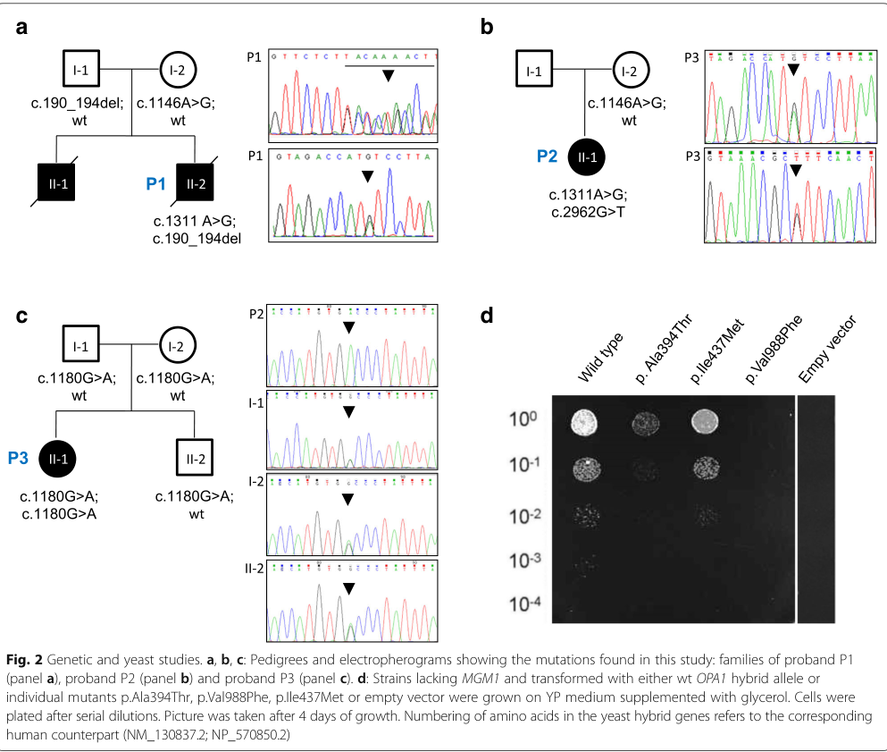

Mitochondrial DNA depletion syndrome 14B (MTDPS14B, OMIM 616896) is an ultra-rare, autosomal recessive, infantile-onset mitochondrial disorder caused by biallelic pathogenic variants in OPA1. It was delineated in two sisters of a consanguineous Arab Muslim family who were homozygous for a novel OPA1 c.1601T>G (p.Leu534Arg) missense variant affecting the catalytic GTPase domain. The defining clinical triad is fatal infantile mitochondrial encephalomyopathy, progressive non-obstructive hypertrophic cardiomyopathy, and optic atrophy, with failure to thrive, generalised neuromuscular weakness and death in the first year of life. OPA1 encodes a dynamin-like GTPase of the inner mitochondrial membrane that mediates inner-membrane fusion, shapes cristae, stabilises respiratory chain supercomplexes and — through the peptide encoded by alternatively spliced exon 4b — anchors mtDNA nucleoids to the inner membrane. The homozygous p.Leu534Arg substitution destabilises the protein, causing a marked loss of steady-state OPA1, abnormal inner-membrane fusion on electron microscopy, severe mtDNA depletion in skeletal muscle (about 78% reduction in copy number) and a global respiratory chain deficiency most pronounced for complexes I and IV. This places the disorder among the mtDNA depletion syndromes and distinguishes it mechanistically from the far commoner heterozygous OPA1 disorders (autosomal dominant optic atrophy, OMIM 165500, and DOA plus), which are allelic but clinically and genetically distinct. ENTITY-IDENTITY NOTE: MTDPS14B is an OPA1 disease, NOT an SLC25A4 disease. SLC25A4 (ANT1) causes mitochondrial DNA depletion syndrome 12 (cardiomyopathic type), a different member of the numbered MTDPS series whose cardiac phenotype invites confusion with this entry. The OPA1 assignment here was established from the MONDO record for MONDO:0014820 (OAK `sqlite:obo:mondo`, which carries the design-pattern synonym "OPA1 mitochondrial DNA depletion syndrome" and the xref OMIM:616896), corroborated by the OMIM anchor of the defining publication. The sibling concept MONDO:0980967 (MTDPS 14A, encephalomyopathic type, OMIM:621481) carries an explicit RO:0004003 relationship to HGNC:8140 OPA1; MONDO:0014820 itself records no causal-gene relationship, which is why the automated `just preflight-dr` gene check returns SKIP for this concept and the manual OMIM/synonym preflight was used instead.
Ask a research question about Mitochondrial DNA Depletion Syndrome 14B (Cardioencephalomyopathic Type). OpenScientist will conduct autonomous deep research using the Disorder Mechanisms Knowledge Base and PubMed literature (typically 10-30 minutes).
Do not include personal health information in your question. Questions and results are cached in your browser's local storage.
Conditions with similar clinical presentations that must be differentiated from Mitochondrial DNA Depletion Syndrome 14B (Cardioencephalomyopathic Type):
name: Mitochondrial DNA Depletion Syndrome 14B (Cardioencephalomyopathic Type)
creation_date: "2026-08-18T00:00:00Z"
category: Mendelian
disease_term:
preferred_term: mitochondrial DNA depletion syndrome 14B (cardioencephalomyopathic type)
term:
id: MONDO:0014820
label: mitochondrial DNA depletion syndrome 14B (cardioencephalomyopathic type)
description: >
Mitochondrial DNA depletion syndrome 14B (MTDPS14B, OMIM 616896) is an
ultra-rare, autosomal recessive, infantile-onset mitochondrial disorder caused
by biallelic pathogenic variants in OPA1. It was delineated in two sisters of a
consanguineous Arab Muslim family who were homozygous for a novel OPA1
c.1601T>G (p.Leu534Arg) missense variant affecting the catalytic GTPase domain.
The defining clinical triad is fatal infantile mitochondrial encephalomyopathy,
progressive non-obstructive hypertrophic cardiomyopathy, and optic atrophy, with
failure to thrive, generalised neuromuscular weakness and death in the first
year of life. OPA1 encodes a dynamin-like GTPase of the inner mitochondrial
membrane that mediates inner-membrane fusion, shapes cristae, stabilises
respiratory chain supercomplexes and — through the peptide encoded by
alternatively spliced exon 4b — anchors mtDNA nucleoids to the inner membrane.
The homozygous p.Leu534Arg substitution destabilises the protein, causing a
marked loss of steady-state OPA1, abnormal inner-membrane fusion on electron
microscopy, severe mtDNA depletion in skeletal muscle (about 78% reduction in
copy number) and a global respiratory chain deficiency most pronounced for
complexes I and IV. This places the disorder among the mtDNA depletion
syndromes and distinguishes it mechanistically from the far commoner
heterozygous OPA1 disorders (autosomal dominant optic atrophy, OMIM 165500, and
DOA plus), which are allelic but clinically and genetically distinct.
ENTITY-IDENTITY NOTE: MTDPS14B is an OPA1 disease, NOT an SLC25A4 disease.
SLC25A4 (ANT1) causes mitochondrial DNA depletion syndrome 12
(cardiomyopathic type), a different member of the numbered MTDPS series whose
cardiac phenotype invites confusion with this entry. The OPA1 assignment here
was established from the MONDO record for MONDO:0014820 (OAK
`sqlite:obo:mondo`, which carries the design-pattern synonym "OPA1
mitochondrial DNA depletion syndrome" and the xref OMIM:616896), corroborated
by the OMIM anchor of the defining publication. The sibling concept
MONDO:0980967 (MTDPS 14A, encephalomyopathic type, OMIM:621481) carries an
explicit RO:0004003 relationship to HGNC:8140 OPA1; MONDO:0014820 itself
records no causal-gene relationship, which is why the automated
`just preflight-dr` gene check returns SKIP for this concept and the manual
OMIM/synonym preflight was used instead.
references:
- reference: PMID:20301426
title: "Optic Atrophy Type 1 – RETIRED CHAPTER, FOR HISTORICAL REFERENCE ONLY."
parents:
- mitochondrial DNA depletion syndrome
- mitochondrial disease
synonyms:
- MTDPS14B
- MTDPS14
- mitochondrial DNA depletion syndrome 14 (cardioencephalomyopathic type)
- mitochondrial DNA depletion syndrome 14 (encephalocardiomyopathic type)
- OPA1 mitochondrial DNA depletion syndrome
mappings:
mondo_mappings:
- term:
id: MONDO:0980967
label: mitochondrial dna depletion syndrome 14A (encephalomyopathic type)
mapping_predicate: skos:relatedMatch
mapping_source: MONDO
mapping_justification: >
MONDO:0980967 (MTDPS 14A, encephalomyopathic type, OMIM:621481) is the
sibling concept created when OMIM split the original MTDPS14 designation.
It is also an OPA1 disorder (RO:0004003 HGNC:8140) but is defined without
the cardiomyopathic component that defines this entry. relatedMatch, not
close/exact, because the two concepts are deliberately distinct OMIM
phenotypes; this mapping is recorded to make the 14A/14B split explicit
and auditable rather than to merge the concepts.
classifications:
harrisons_chapter:
- classification_value: NEUROLOGIC
evidence:
- reference: PMID:26561570
reference_title: "Fatal infantile mitochondrial encephalomyopathy, hypertrophic cardiomyopathy and optic atrophy associated with a homozygous OPA1 mutation."
supports: SUPPORT
evidence_source: HUMAN_CLINICAL
snippet: "The disease progression was ultimately fatal with severe encephalopathy and hypertrophic cardiomyopathy."
explanation: >
Severe encephalopathy is the dominant clinical axis of the syndrome,
placing it in the neurologic chapter despite the prominent cardiac
involvement.
- classification_value: CARDIOVASCULAR
evidence:
- reference: PMID:26561570
reference_title: "Fatal infantile mitochondrial encephalomyopathy, hypertrophic cardiomyopathy and optic atrophy associated with a homozygous OPA1 mutation."
supports: SUPPORT
evidence_source: HUMAN_CLINICAL
snippet: "Second, hypertrophic cardiomyopathy has not been reported previously to be associated with human OPA1 mutations."
explanation: >
Progressive hypertrophic cardiomyopathy is the feature that defines the
cardioencephalomyopathic subtype and names the entity, so the entry is
classified under the cardiovascular chapter as well as the neurologic
one.
mechanistic_category:
- classification_value: mitochondrial disease
evidence:
- reference: PMID:26561570
reference_title: "Fatal infantile mitochondrial encephalomyopathy, hypertrophic cardiomyopathy and optic atrophy associated with a homozygous OPA1 mutation."
supports: SUPPORT
evidence_source: HUMAN_CLINICAL
snippet: "Mitochondrial respiratory chain complex activities were globally decreased in skeletal muscle biopsies."
explanation: >
A demonstrated combined respiratory chain deficiency arising from a
nuclear mtDNA-maintenance gene defines this as a mitochondrial disease.
pathophysiology:
- name: Destabilization of the OPA1 Dynamin-like GTPase
biological_scale: MOLECULAR
description: >
OPA1 is a large, multimeric, dynamin-like GTPase that localises to the inner
mitochondrial membrane. In MTDPS14B the homozygous c.1601T>G (p.Leu534Arg)
substitution replaces a highly conserved hydrophobic leucine with arginine
immediately adjacent to the catalytic GTPase domain. In silico modelling
predicts that this destabilises the protein fold, and western blotting of
patient skeletal muscle confirms a marked reduction in steady-state native
OPA1. Because OPA1 acts as an oligomer, the complete absence of a wild-type
allele in the homozygous state is expected to further compromise stability
through impaired oligomerisation.
downstream:
- target: Impaired Inner Mitochondrial Membrane Fusion
description: >
Loss of functional OPA1 protein removes the inner-membrane fusion
activity that OPA1 provides.
causal_link_type: DIRECT
evidence:
- reference: PMID:26561570
reference_title: "Fatal infantile mitochondrial encephalomyopathy, hypertrophic cardiomyopathy and optic atrophy associated with a homozygous OPA1 mutation."
supports: SUPPORT
evidence_source: HUMAN_CLINICAL
snippet: "Mitochondrial morphology was consistent with abnormal mitochondrial membrane fusion."
explanation: >
Abnormal mitochondrial membrane fusion in the muscle of the OPA1-homozygous patients links the protein lesion to the fusion and cristae defect.
- target: Muscle mtDNA Depletion
description: >
OPA1 anchors mtDNA nucleoids to the inner membrane via the exon-4b-encoded
peptide; loss of OPA1 therefore compromises mtDNA replication and
distribution directly, not only through the fusion defect.
causal_link_type: DIRECT
evidence:
- reference: PMID:20974897
reference_title: "OPA1 links human mitochondrial genome maintenance to mtDNA replication and distribution."
supports: SUPPORT
evidence_source: IN_VITRO
snippet: "Thus, this study places OPA1 as a direct actor in the maintenance of mitochondrial genome integrity."
explanation: >
Establishes a direct, fusion-independent route from loss of OPA1 to failure of mitochondrial genome maintenance.
molecular_functions:
- preferred_term: GTPase activity
term:
id: GO:0003924
label: GTPase activity
modifier: DECREASED
genetic_context:
functional_impact_category: LOSS_OF_FUNCTION
allele_type: SNV
variant_origin: GERMLINE
zygosity: HOMOZYGOUS
evidence:
- reference: PMID:26561570
reference_title: "Fatal infantile mitochondrial encephalomyopathy, hypertrophic cardiomyopathy and optic atrophy associated with a homozygous OPA1 mutation."
supports: SUPPORT
evidence_source: HUMAN_CLINICAL
snippet: "They were found to be homozygous for a novel c.1601T>G (p.Leu534Arg) mutation in the OPA1 gene, which resulted in a marked loss of steady-state levels of the native OPA1 protein."
explanation: >
Establishes the causal homozygous OPA1 variant and its consequence, a
marked loss of steady-state OPA1 protein.
- reference: PMID:26561570
reference_title: "Fatal infantile mitochondrial encephalomyopathy, hypertrophic cardiomyopathy and optic atrophy associated with a homozygous OPA1 mutation."
supports: SUPPORT
evidence_source: COMPUTATIONAL
snippet: "Our modelling work suggests that this amino acid substitution, in the close vicinity of the protein's critical GTPase domain, could destabilise the protein, accounting for the significantly reduced OPA1 protein level observed on western blot analysis"
explanation: >
In silico modelling result linking the p.Leu534Arg substitution near the
catalytic GTPase domain to protein destabilization and the reduced
steady-state OPA1 measured on western blot.
- reference: PMID:26561570
reference_title: "Fatal infantile mitochondrial encephalomyopathy, hypertrophic cardiomyopathy and optic atrophy associated with a homozygous OPA1 mutation."
supports: SUPPORT
evidence_source: HUMAN_CLINICAL
snippet: "OPA1 encodes for a large multimeric dynamin-like GTPase protein, which localises to the inner mitochondrial membrane where it plays a crucial role in mediating mitochondrial fusion."
explanation: >
Establishes the molecular identity and inner-membrane localisation of the
affected protein.
- name: Impaired Inner Mitochondrial Membrane Fusion
biological_scale: CELLULAR
description: >
OPA1 mediates fusion of the inner mitochondrial membrane. Transmission
electron microscopy of patient skeletal muscle in MTDPS14B disclosed large
mitochondria with incomplete fusion of the inner mitochondrial membrane —
the directly observed structural correlate of the fusion defect in these
patients. This node carries only what was measured in patient tissue; the
cristae arm is modelled separately because it was NOT observed in these
biopsies and because OPA1 fusion and cristae-shaping are genetically and
molecularly distinct functions.
downstream:
- target: Cristae Disorganization and Respiratory Supercomplex Destabilization
description: >
Loss of OPA1 oligomers that hold cristae junctions tight is expected to
disorganize cristae. Inferred from general OPA1 cell biology, not observed
in these patients.
causal_link_type: INDIRECT_KNOWN_INTERMEDIATES
evidence:
- reference: PMID:16839885
reference_title: "OPA1 controls apoptotic cristae remodeling independently from mitochondrial fusion."
supports: PARTIAL
evidence_source: IN_VITRO
snippet: "Thus, OPA1 has genetically and molecularly distinct functions in mitochondrial fusion and in cristae remodeling during apoptosis."
explanation: >
Establishes that cristae control is a separate OPA1 function from
fusion, which is why this edge is INDIRECT and the two are modelled as
distinct nodes rather than one. PARTIAL because the cristae arm is
inferred from cell biology, not measured in these patients.
biological_processes:
- preferred_term: mitochondrial fusion
term:
id: GO:0008053
label: mitochondrial fusion
modifier: DECREASED
- preferred_term: inner mitochondrial membrane organization
term:
id: GO:0007007
label: inner mitochondrial membrane organization
modifier: ABNORMAL
cell_types:
- preferred_term: skeletal muscle fiber
term:
id: CL:0008002
label: skeletal muscle fiber
evidence:
- reference: PMID:26561570
reference_title: "Fatal infantile mitochondrial encephalomyopathy, hypertrophic cardiomyopathy and optic atrophy associated with a homozygous OPA1 mutation."
supports: SUPPORT
evidence_source: HUMAN_CLINICAL
snippet: "Transmission electron microscopy (TEM) assay of muscle biopsy from patient I-2 disclosed large mitochondria with incomplete fusion of the inner mitochondrial membrane"
explanation: >
Direct ultrastructural demonstration of defective inner mitochondrial
membrane fusion in patient muscle.
- reference: PMID:26561570
reference_title: "Fatal infantile mitochondrial encephalomyopathy, hypertrophic cardiomyopathy and optic atrophy associated with a homozygous OPA1 mutation."
supports: SUPPORT
evidence_source: HUMAN_CLINICAL
snippet: "Mitochondrial morphology was consistent with abnormal mitochondrial membrane fusion."
explanation: >
Summarises the morphological finding as abnormal mitochondrial membrane
fusion in the affected siblings.
- name: Cristae Disorganization and Respiratory Supercomplex Destabilization
biological_scale: CELLULAR
description: >
INFERRED NODE — not observed in MTDPS14B patient tissue. OPA1 oligomers
spanning the intermembrane space and inner membrane keep cristae junctions
tight, and cristae shape determines the assembly and stability of
respiratory chain supercomplexes. Loss of OPA1 is therefore expected to
disorganize cristae and destabilise supercomplexes, giving a second route
from the OPA1 lesion to the measured respiratory chain deficiency alongside
the mtDNA depletion arm. The evidence for this node is general OPA1 cell
biology; no cristae abnormality was reported in the patient biopsies, whose
only reported ultrastructural finding was incomplete inner-membrane fusion.
downstream:
- target: Combined Respiratory Chain Deficiency
description: >
Disorganized cristae destabilise respiratory chain supercomplexes and
lower respiratory efficiency.
causal_link_type: INDIRECT_KNOWN_INTERMEDIATES
evidence:
- reference: PMID:24055366
reference_title: "Mitochondrial cristae shape determines respiratory chain supercomplexes assembly and respiratory efficiency."
supports: SUPPORT
evidence_source: IN_VITRO
snippet: "provide evidence that cristae shape determines the assembly and stability of RCS and hence mitochondrial respiratory efficiency"
explanation: >
Supplies the causal link from cristae shape to respiratory chain
supercomplex assembly and respiratory efficiency. Tagged IN_VITRO for
the cell- and isolated-mitochondria assays that establish the link; note
the same paper also reports Opa1 mouse (in vivo) data.
biological_processes:
- preferred_term: cristae formation
term:
id: GO:0042407
label: cristae formation
modifier: ABNORMAL
evidence:
- reference: PMID:16839885
reference_title: "OPA1 controls apoptotic cristae remodeling independently from mitochondrial fusion."
supports: PARTIAL
evidence_source: IN_VITRO
snippet: "it controls the shape of mitochondrial cristae, keeping their junctions tight during apoptosis"
explanation: >
Establishes that OPA1 shapes cristae and keeps cristae junctions tight.
PARTIAL because this is general OPA1 cell biology, not a finding in
MTDPS14B patient tissue.
- reference: PMID:24055366
reference_title: "Mitochondrial cristae shape determines respiratory chain supercomplexes assembly and respiratory efficiency."
supports: PARTIAL
evidence_source: IN_VITRO
snippet: "we investigate the relationship between respiratory function and mitochondrial ultrastructure and provide evidence that cristae shape determines the assembly and stability of RCS and hence mitochondrial respiratory efficiency"
explanation: >
Provides the general mechanistic link between cristae shape and
respiratory chain supercomplex assembly. PARTIAL because it is general
cell and mouse biology rather than MTDPS14B patient data; the paper spans
in vitro and in vivo (Opa1 mouse) arms, and this item is tagged for its
cell-based arm.
- name: Muscle mtDNA Depletion
biological_scale: MOLECULAR
description: >
Beyond membrane fusion, OPA1 is required for maintenance of the mitochondrial
genome. A small hydrophobic peptide derived from the OPA1 isoform containing
alternatively spliced exon 4b is embedded in the inner membrane and
co-immunoprecipitates with nucleoid components, tethering nucleoids to the
inner membrane and promoting mtDNA replication and distribution. Silencing
exon-4b-containing OPA1 isoforms in human cells causes mtDNA depletion
secondary to inhibited mtDNA replication. In MTDPS14B, quantitative PCR of
patient skeletal muscle showed a roughly 78% reduction in mtDNA copy number
in both affected sisters, while long-range PCR found no multiple mtDNA
deletions — the depletion phenotype, not the deletion phenotype seen in older
OPA1 mutation carriers, is what places this disorder in the mtDNA depletion
syndrome series.
downstream:
- target: Depletion of Mitochondrial DNA in Muscle Tissue
description: >
The loss of mtDNA copy number in skeletal muscle is itself the measurable
clinical-laboratory phenotype that classifies this disorder among the
mtDNA depletion syndromes.
causal_link_type: DIRECT
evidence:
- reference: PMID:26561570
reference_title: "Fatal infantile mitochondrial encephalomyopathy, hypertrophic cardiomyopathy and optic atrophy associated with a homozygous OPA1 mutation."
supports: SUPPORT
evidence_source: HUMAN_CLINICAL
snippet: "there was evidence of significant mtDNA depletion with a 78% decrease for patient I-1 and a 78% decrease for patient I-2 compared with control values"
explanation: >
Quantifies the muscle mtDNA depletion recorded as a phenotype.
- target: Combined Respiratory Chain Deficiency
description: >
Reduced mtDNA copy number lowers the template supply for the 13
mtDNA-encoded respiratory chain subunits, producing a combined enzyme
deficiency.
causal_link_type: DIRECT
evidence:
- reference: PMID:26561570
reference_title: "Fatal infantile mitochondrial encephalomyopathy, hypertrophic cardiomyopathy and optic atrophy associated with a homozygous OPA1 mutation."
supports: SUPPORT
evidence_source: HUMAN_CLINICAL
snippet: "This analysis revealed global decrease in all the respiratory chain complexes when normalised to CS activity in both patients, with complexes I and IV being the most affected"
explanation: >
The complex I and IV predominant deficiency in the same muscle biopsies that showed mtDNA depletion is the expected consequence of reduced mtDNA template supply.
biological_processes:
- preferred_term: mitochondrial DNA replication
term:
id: GO:0006264
label: mitochondrial DNA replication
modifier: DECREASED
- preferred_term: mitochondrion organization
term:
id: GO:0007005
label: mitochondrion organization
modifier: ABNORMAL
cell_types:
- preferred_term: skeletal muscle fiber
term:
id: CL:0008002
label: skeletal muscle fiber
evidence:
- reference: PMID:26561570
reference_title: "Fatal infantile mitochondrial encephalomyopathy, hypertrophic cardiomyopathy and optic atrophy associated with a homozygous OPA1 mutation."
supports: SUPPORT
evidence_source: HUMAN_CLINICAL
snippet: "there was evidence of significant mtDNA depletion with a 78% decrease for patient I-1 and a 78% decrease for patient I-2 compared with control values"
explanation: >
Quantifies the mtDNA depletion in patient skeletal muscle that defines this
disorder as a mtDNA depletion syndrome.
- reference: PMID:26561570
reference_title: "Fatal infantile mitochondrial encephalomyopathy, hypertrophic cardiomyopathy and optic atrophy associated with a homozygous OPA1 mutation."
supports: SUPPORT
evidence_source: HUMAN_CLINICAL
snippet: "Long-range PCR performed on homogenate DNA extracted from the muscle biopsy specimens of the two affected sisters did not reveal any multiple mitochondrial DNA (mtDNA) deletions"
explanation: >
Distinguishes the depletion phenotype from the multiple-mtDNA-deletion
phenotype otherwise associated with OPA1 mutation carriers.
- reference: PMID:20974897
reference_title: "OPA1 links human mitochondrial genome maintenance to mtDNA replication and distribution."
supports: SUPPORT
evidence_source: IN_VITRO
snippet: "silencing of the OPA1 variants including exon 4b leads to mtDNA depletion, secondary to inhibition of mtDNA replication, and to marked alteration of mtDNA distribution in nucleoid and nucleoid distribution throughout the mitochondrial network"
explanation: >
Demonstrates in human cells that loss of exon-4b-containing OPA1 isoforms
causes mtDNA depletion through inhibited replication, the mechanism
proposed for the muscle mtDNA depletion in this disorder.
- reference: PMID:20974897
reference_title: "OPA1 links human mitochondrial genome maintenance to mtDNA replication and distribution."
supports: SUPPORT
evidence_source: IN_VITRO
snippet: "might contribute to nucleoid attachment to the inner mitochondrial membrane and promotes mtDNA replication and distribution"
explanation: >
Identifies the exon-4b-derived peptide as the physical link between OPA1
and mtDNA nucleoids.
- name: Combined Respiratory Chain Deficiency
biological_scale: CELLULAR
conforms_to: "mitochondrial_dysfunction#Bioenergetic Decline and Oxidative Stress"
description: >
The convergent consequence of cristae disorganization and mtDNA depletion is
a combined oxidative phosphorylation defect. Spectrophotometric assay of
isolated muscle mitochondria from both affected sisters showed a global
decrease in all respiratory chain complexes when normalised to citrate
synthase, with complexes I and IV — the complexes richest in mtDNA-encoded
subunits — most affected and complex II, which is entirely nuclear-encoded,
relatively preserved. This nuclear/mitochondrial-encoded dissociation is the
expected biochemical signature of an mtDNA maintenance defect.
downstream:
- target: Bioenergetic Failure of High-Demand Tissues
description: >
Insufficient ATP generation in tissues with high basal energy consumption
leads to tissue-level dysfunction and degeneration.
causal_link_type: DIRECT
evidence:
- reference: PMID:26561570
reference_title: "Fatal infantile mitochondrial encephalomyopathy, hypertrophic cardiomyopathy and optic atrophy associated with a homozygous OPA1 mutation."
supports: PARTIAL
evidence_source: HUMAN_CLINICAL
snippet: "It is therefore biologically plausible that such a severe impairment in mitochondrial oxidative phosphorylation would have a catastrophic consequence for tissues with a high basal level of energy consumption such as skeletal muscle, cardiac muscle and the central nervous system, in addition to the retina."
explanation: >
States the inference from the measured OXPHOS defect to failure of the high-energy-demand tissues affected in this disorder.
biological_processes:
- preferred_term: oxidative phosphorylation
term:
id: GO:0006119
label: oxidative phosphorylation
modifier: DECREASED
- preferred_term: mitochondrial ATP synthesis coupled electron transport
term:
id: GO:0042775
label: mitochondrial ATP synthesis coupled electron transport
modifier: DECREASED
cell_types:
- preferred_term: skeletal muscle fiber
term:
id: CL:0008002
label: skeletal muscle fiber
evidence:
- reference: PMID:26561570
reference_title: "Fatal infantile mitochondrial encephalomyopathy, hypertrophic cardiomyopathy and optic atrophy associated with a homozygous OPA1 mutation."
supports: SUPPORT
evidence_source: HUMAN_CLINICAL
snippet: "Mitochondrial respiratory chain complex activities were globally decreased in skeletal muscle biopsies."
explanation: >
Documents the combined respiratory chain deficiency in patient muscle.
- reference: PMID:26561570
reference_title: "Fatal infantile mitochondrial encephalomyopathy, hypertrophic cardiomyopathy and optic atrophy associated with a homozygous OPA1 mutation."
supports: SUPPORT
evidence_source: HUMAN_CLINICAL
snippet: "This analysis revealed global decrease in all the respiratory chain complexes when normalised to CS activity in both patients, with complexes I and IV being the most affected"
explanation: >
Specifies the complex I and IV predominance expected of an mtDNA
maintenance defect.
- name: Bioenergetic Failure of High-Demand Tissues
biological_scale: TISSUE
description: >
Severe impairment of oxidative phosphorylation is catastrophic for tissues
with a high basal energy requirement — the central nervous system, retinal
ganglion cells and the optic nerve, cardiac muscle and skeletal muscle. In
MTDPS14B this produces the defining combination of progressive
encephalomyopathy with generalised neuromuscular weakness, progressive
non-obstructive hypertrophic cardiomyopathy, and optic atrophy with
attenuated visual evoked potentials indicating primary retinal ganglion cell
pathology. Hypertrophic cardiomyopathy had not previously been reported with
human OPA1 mutations, and its appearance in the homozygous state is what
distinguishes this cardioencephalomyopathic entity from other OPA1 disorders.
downstream:
- target: Hypertrophic Cardiomyopathy
description: >
Cardiomyocyte energy failure produces the progressive, non-obstructive
hypertrophic cardiomyopathy that defines the cardioencephalomyopathic
subtype.
causal_link_type: DIRECT
evidence:
- reference: PMID:26561570
reference_title: "Fatal infantile mitochondrial encephalomyopathy, hypertrophic cardiomyopathy and optic atrophy associated with a homozygous OPA1 mutation."
supports: SUPPORT
evidence_source: HUMAN_CLINICAL
snippet: "The patient subsequently developed a progressive, non-obstructive, generalised hypertrophic cardiomyopathy, in the absence of overt heart failure."
explanation: >
Documents the cardiac manifestation arising in a patient with the
demonstrated respiratory chain and mtDNA maintenance defect.
- target: Optic Atrophy
description: >
Retinal ganglion cells, the cell type classically vulnerable to OPA1
dysfunction, degenerate and produce optic atrophy.
causal_link_type: DIRECT
evidence:
- reference: PMID:26561570
reference_title: "Fatal infantile mitochondrial encephalomyopathy, hypertrophic cardiomyopathy and optic atrophy associated with a homozygous OPA1 mutation."
supports: SUPPORT
evidence_source: HUMAN_CLINICAL
snippet: "Visual electrophysiology revealed severely attenuated visual evoked potentials, consistent with primary retinal ganglion cell pathology"
explanation: >
Locates the visual deficit to retinal ganglion cells, connecting the
bioenergetic node to the optic atrophy phenotype.
- target: Encephalopathy
description: >
Neuronal energy failure in the central nervous system produces the severe
progressive encephalopathy.
causal_link_type: DIRECT
evidence:
- reference: PMID:26561570
reference_title: "Fatal infantile mitochondrial encephalomyopathy, hypertrophic cardiomyopathy and optic atrophy associated with a homozygous OPA1 mutation."
supports: SUPPORT
evidence_source: HUMAN_CLINICAL
snippet: "The disease progression was ultimately fatal with severe encephalopathy and hypertrophic cardiomyopathy."
explanation: >
Documents the encephalopathy arising from the multisystem mitochondrial
defect.
- target: Generalized Muscle Weakness
description: >
Skeletal muscle energy failure produces the generalised neuromuscular
weakness present in both affected siblings.
causal_link_type: DIRECT
evidence:
- reference: PMID:26561570
reference_title: "Fatal infantile mitochondrial encephalomyopathy, hypertrophic cardiomyopathy and optic atrophy associated with a homozygous OPA1 mutation."
supports: SUPPORT
evidence_source: HUMAN_CLINICAL
snippet: "Both affected sisters presented with a similar cluster of neurodevelopmental deficits marked by failure to thrive, generalised neuromuscular weakness and optic atrophy."
explanation: >
Documents generalised neuromuscular weakness in the setting of the
demonstrated muscle respiratory chain deficiency.
- target: Fatal Infantile Multisystem Decompensation
description: >
Progressive multisystem energy failure culminates in fatal decompensation
within the first year of life.
causal_link_type: DIRECT
evidence:
- reference: PMID:26561570
reference_title: "Fatal infantile mitochondrial encephalomyopathy, hypertrophic cardiomyopathy and optic atrophy associated with a homozygous OPA1 mutation."
supports: SUPPORT
evidence_source: HUMAN_CLINICAL
snippet: "The disease progression was ultimately fatal with severe encephalopathy and hypertrophic cardiomyopathy."
explanation: >
Documents that the multisystem tissue failure progressed to a fatal outcome.
cell_types:
- preferred_term: cardiac muscle cell
term:
id: CL:0000746
label: cardiac muscle cell
- preferred_term: retinal ganglion cell
term:
id: CL:0000740
label: retinal ganglion cell
- preferred_term: neuron
term:
id: CL:0000540
label: neuron
- preferred_term: skeletal muscle fiber
term:
id: CL:0008002
label: skeletal muscle fiber
evidence:
- reference: PMID:26561570
reference_title: "Fatal infantile mitochondrial encephalomyopathy, hypertrophic cardiomyopathy and optic atrophy associated with a homozygous OPA1 mutation."
supports: SUPPORT
evidence_source: HUMAN_CLINICAL
snippet: "Both affected sisters presented with a similar cluster of neurodevelopmental deficits marked by failure to thrive, generalised neuromuscular weakness and optic atrophy."
explanation: >
Describes the multisystem, high-energy-demand tissue involvement produced
by the bioenergetic defect.
- reference: PMID:26561570
reference_title: "Fatal infantile mitochondrial encephalomyopathy, hypertrophic cardiomyopathy and optic atrophy associated with a homozygous OPA1 mutation."
supports: PARTIAL
evidence_source: HUMAN_CLINICAL
snippet: "It is therefore biologically plausible that such a severe impairment in mitochondrial oxidative phosphorylation would have a catastrophic consequence for tissues with a high basal level of energy consumption such as skeletal muscle, cardiac muscle and the central nervous system, in addition to the retina."
explanation: >
States the authors' tissue-selectivity argument linking the OXPHOS defect
to the affected organs.
- reference: PMID:26561570
reference_title: "Fatal infantile mitochondrial encephalomyopathy, hypertrophic cardiomyopathy and optic atrophy associated with a homozygous OPA1 mutation."
supports: SUPPORT
evidence_source: HUMAN_CLINICAL
snippet: "Visual electrophysiology revealed severely attenuated visual evoked potentials, consistent with primary retinal ganglion cell pathology"
explanation: >
Locates the visual deficit to retinal ganglion cells, the cell type
classically vulnerable in OPA1 disease.
- name: Fatal Infantile Multisystem Decompensation
biological_scale: ORGANISM
description: >
The natural history described for MTDPS14B is relentless progression from
early infancy. Both reported siblings had failure to thrive from birth,
progressive hypertrophic non-obstructive cardiomyopathy without overt heart
failure, profound neurodevelopmental impairment, and died at 10 and 11 months
of age following apnoeic episodes.
evidence:
- reference: PMID:26561570
reference_title: "Fatal infantile mitochondrial encephalomyopathy, hypertrophic cardiomyopathy and optic atrophy associated with a homozygous OPA1 mutation."
supports: SUPPORT
evidence_source: HUMAN_CLINICAL
snippet: "The disease progression was ultimately fatal with severe encephalopathy and hypertrophic cardiomyopathy."
explanation: >
Summarises the fatal multisystem course.
- reference: PMID:26561570
reference_title: "Fatal infantile mitochondrial encephalomyopathy, hypertrophic cardiomyopathy and optic atrophy associated with a homozygous OPA1 mutation."
supports: SUPPORT
evidence_source: HUMAN_CLINICAL
snippet: "The patient died at 10 months of age following an apnoeic episode."
explanation: >
Documents the terminal event and age at death in the first sibling.
phenotypes:
- category: Cardiovascular
name: Hypertrophic Cardiomyopathy
description: >
Progressive, non-obstructive, generalised hypertrophic cardiomyopathy
developing in infancy. In one sibling initial echocardiography was
unremarkable and hypertrophy developed subsequently; in the other, mild left
ventricular thickening was present in the neonatal period. Overt heart
failure was not a feature. This is the cardinal cardiac feature that defines
the cardioencephalomyopathic subtype.
phenotype_term:
preferred_term: Hypertrophic cardiomyopathy
term:
id: HP:0001639
label: Hypertrophic cardiomyopathy
clinical_course: PROGRESSIVE
diagnostic: true
evidence:
- reference: PMID:26561570
reference_title: "Fatal infantile mitochondrial encephalomyopathy, hypertrophic cardiomyopathy and optic atrophy associated with a homozygous OPA1 mutation."
supports: SUPPORT
evidence_source: HUMAN_CLINICAL
snippet: "The patient subsequently developed a progressive, non-obstructive, generalised hypertrophic cardiomyopathy, in the absence of overt heart failure."
explanation: >
Documents the progressive non-obstructive hypertrophic cardiomyopathy in
the first affected sibling.
- reference: PMID:26561570
reference_title: "Fatal infantile mitochondrial encephalomyopathy, hypertrophic cardiomyopathy and optic atrophy associated with a homozygous OPA1 mutation."
supports: SUPPORT
evidence_source: HUMAN_CLINICAL
snippet: "Second, hypertrophic cardiomyopathy has not been reported previously to be associated with human OPA1 mutations."
explanation: >
Establishes hypertrophic cardiomyopathy as the novel, defining feature
separating this entity from other OPA1 disorders.
- category: Ophthalmologic
name: Optic Atrophy
description: >
Optic atrophy is part of the defining triad. Ophthalmological examination at
6 months of age in one sibling revealed mild pallor of both optic nerves,
with severely attenuated visual evoked potentials indicating primary retinal
ganglion cell pathology.
phenotype_term:
preferred_term: Optic atrophy
term:
id: HP:0000648
label: Optic atrophy
diagnostic: true
evidence:
- reference: PMID:26561570
reference_title: "Fatal infantile mitochondrial encephalomyopathy, hypertrophic cardiomyopathy and optic atrophy associated with a homozygous OPA1 mutation."
supports: SUPPORT
evidence_source: HUMAN_CLINICAL
snippet: "Ophthalmological examination at 6 months of age revealed mild pallor of both optic nerves."
explanation: >
Documents the optic nerve pallor establishing optic atrophy in an affected
infant.
- category: Ophthalmologic
name: Abnormal Visual Evoked Potentials
description: >
Severely attenuated visual evoked potentials, consistent with primary retinal
ganglion cell pathology, documented on visual electrophysiology in the
second affected sibling (the only one in whom it was measured).
phenotype_term:
preferred_term: Abnormality of visual evoked potentials
term:
id: HP:0000649
label: Abnormality of visual evoked potentials
evidence:
- reference: PMID:26561570
reference_title: "Fatal infantile mitochondrial encephalomyopathy, hypertrophic cardiomyopathy and optic atrophy associated with a homozygous OPA1 mutation."
supports: SUPPORT
evidence_source: HUMAN_CLINICAL
snippet: "Visual electrophysiology revealed severely attenuated visual evoked potentials, consistent with primary retinal ganglion cell pathology"
explanation: >
Directly documents severely attenuated visual evoked potentials.
- category: Ophthalmologic
name: Abnormal Electroretinogram
description: >
Electroretinogram responses were significantly reduced in the second
affected sibling, indicating global retinal degeneration in addition to the
retinal ganglion cell pathology. Recorded in one of the two patients.
phenotype_term:
preferred_term: Abnormal electroretinogram
term:
id: HP:0000512
label: Abnormal electroretinogram
evidence:
- reference: PMID:26561570
reference_title: "Fatal infantile mitochondrial encephalomyopathy, hypertrophic cardiomyopathy and optic atrophy associated with a homozygous OPA1 mutation."
supports: SUPPORT
evidence_source: HUMAN_CLINICAL
snippet: "the electroretinogram responses were significantly reduced, indicative of more global retinal degeneration"
explanation: >
Documents reduced electroretinogram responses in an affected infant.
- category: Neurologic
name: Severe Global Developmental Delay
description: >
Profound neurodevelopmental impairment. One sibling had severe
neurodevelopmental delay with a normal brain MRI; the other developed
profound neurodevelopmental retardation.
phenotype_term:
preferred_term: Severe global developmental delay
term:
id: HP:0011344
label: Severe global developmental delay
evidence:
- reference: PMID:26561570
reference_title: "Fatal infantile mitochondrial encephalomyopathy, hypertrophic cardiomyopathy and optic atrophy associated with a homozygous OPA1 mutation."
supports: SUPPORT
evidence_source: HUMAN_CLINICAL
snippet: "Disease progression was marked by a persisting failure to thrive with severe neurodevelopmental delay, but brain MRI was normal."
explanation: >
Documents severe neurodevelopmental delay in an affected infant.
- category: Neurologic
name: Encephalopathy
description: >
Severe progressive encephalopathy is the neurological core of the syndrome
and, with hypertrophic cardiomyopathy, the proximate cause of death.
phenotype_term:
preferred_term: Encephalopathy
term:
id: HP:0001298
label: Encephalopathy
clinical_course: PROGRESSIVE
evidence:
- reference: PMID:26561570
reference_title: "Fatal infantile mitochondrial encephalomyopathy, hypertrophic cardiomyopathy and optic atrophy associated with a homozygous OPA1 mutation."
supports: SUPPORT
evidence_source: HUMAN_CLINICAL
snippet: "The disease progression was ultimately fatal with severe encephalopathy and hypertrophic cardiomyopathy."
explanation: >
Documents severe encephalopathy as a defining manifestation.
- category: Neurologic
name: Generalized Hypotonia
description: >
Truncal hypotonia noted at 2 months of age in one sibling; the other
developed hypotonia with significant muscle wasting. Hypotonia alternated
with episodes of hypertonia and opisthotonic posturing.
phenotype_term:
preferred_term: Generalized hypotonia
term:
id: HP:0001290
label: Generalized hypotonia
evidence:
- reference: PMID:26561570
reference_title: "Fatal infantile mitochondrial encephalomyopathy, hypertrophic cardiomyopathy and optic atrophy associated with a homozygous OPA1 mutation."
supports: SUPPORT
evidence_source: HUMAN_CLINICAL
snippet: "At 2 months of age, she was also noted to have truncal hypotonia that was replaced by multiple episodes of hypertonia and opisthotonic posturing."
explanation: >
Documents hypotonia in an affected infant.
- category: Neurologic
name: Opisthotonus
description: >
Recurrent opisthotonic posturing accompanied episodes of generalised
hypertonia in both siblings.
phenotype_term:
preferred_term: Opisthotonus
term:
id: HP:0002179
label: Opisthotonus
evidence:
- reference: PMID:26561570
reference_title: "Fatal infantile mitochondrial encephalomyopathy, hypertrophic cardiomyopathy and optic atrophy associated with a homozygous OPA1 mutation."
supports: SUPPORT
evidence_source: HUMAN_CLINICAL
snippet: "Two days later, she developed generalised hypertonia and opisthotonic posturing, and feeding was inadequate due to poor suckling."
explanation: >
Documents opisthotonic posturing in the second affected sibling.
- category: Musculoskeletal
name: Generalized Muscle Weakness
description: >
Generalised neuromuscular weakness was a presenting feature in both affected
sisters.
phenotype_term:
preferred_term: Generalized muscle weakness
term:
id: HP:0003324
label: Generalized muscle weakness
evidence:
- reference: PMID:26561570
reference_title: "Fatal infantile mitochondrial encephalomyopathy, hypertrophic cardiomyopathy and optic atrophy associated with a homozygous OPA1 mutation."
supports: SUPPORT
evidence_source: HUMAN_CLINICAL
snippet: "Both affected sisters presented with a similar cluster of neurodevelopmental deficits marked by failure to thrive, generalised neuromuscular weakness and optic atrophy."
explanation: >
Documents generalised neuromuscular weakness in both affected siblings.
- category: Musculoskeletal
name: Skeletal Muscle Atrophy
description: >
Significant muscle wasting accompanied the hypotonia in the second affected
sibling.
phenotype_term:
preferred_term: Skeletal muscle atrophy
term:
id: HP:0003202
label: Skeletal muscle atrophy
evidence:
- reference: PMID:26561570
reference_title: "Fatal infantile mitochondrial encephalomyopathy, hypertrophic cardiomyopathy and optic atrophy associated with a homozygous OPA1 mutation."
supports: SUPPORT
evidence_source: HUMAN_CLINICAL
snippet: "hypotonia with significant muscle wasting and sensorineural deafness"
explanation: >
Documents significant muscle wasting in an affected infant.
- category: Auditory
name: Sensorineural Hearing Impairment
description: >
Sensorineural deafness developed in the second affected sibling, consistent
with the auditory neuropathy seen across the OPA1 disease spectrum.
phenotype_term:
preferred_term: Sensorineural hearing impairment
term:
id: HP:0000407
label: Sensorineural hearing impairment
evidence:
- reference: PMID:26561570
reference_title: "Fatal infantile mitochondrial encephalomyopathy, hypertrophic cardiomyopathy and optic atrophy associated with a homozygous OPA1 mutation."
supports: SUPPORT
evidence_source: HUMAN_CLINICAL
snippet: "hypotonia with significant muscle wasting and sensorineural deafness"
explanation: >
Documents sensorineural deafness in an affected infant.
- category: Growth
name: Failure to Thrive
description: >
Failure to thrive was present from birth in one sibling and persisted in
both, requiring gastrostomy in one.
phenotype_term:
preferred_term: Failure to thrive
term:
id: HP:0001508
label: Failure to thrive
diagnostic: false
evidence:
- reference: PMID:26561570
reference_title: "Fatal infantile mitochondrial encephalomyopathy, hypertrophic cardiomyopathy and optic atrophy associated with a homozygous OPA1 mutation."
supports: SUPPORT
evidence_source: HUMAN_CLINICAL
snippet: "Both affected sisters presented with a similar cluster of neurodevelopmental deficits marked by failure to thrive, generalised neuromuscular weakness and optic atrophy."
explanation: >
Documents failure to thrive in both affected siblings.
- category: Gastrointestinal
name: Gastroesophageal Reflux
description: >
Gastro-oesophageal reflux with persisting failure to thrive required a
gastrostomy tube and Nissen fundoplication at 3 months of age.
phenotype_term:
preferred_term: Gastroesophageal reflux
term:
id: HP:0002020
label: Gastroesophageal reflux
evidence:
- reference: PMID:26561570
reference_title: "Fatal infantile mitochondrial encephalomyopathy, hypertrophic cardiomyopathy and optic atrophy associated with a homozygous OPA1 mutation."
supports: SUPPORT
evidence_source: HUMAN_CLINICAL
snippet: "Due to gastro-oesophageal reflux and persisting failure to thrive, a gastrostomy tube and Nissen funduplication procedures were performed at 3 months of age."
explanation: >
Documents gastro-oesophageal reflux requiring surgical management.
- category: Gastrointestinal
name: Feeding Difficulties
description: >
Inadequate feeding due to poor suckling from the neonatal period.
phenotype_term:
preferred_term: Feeding difficulties
term:
id: HP:0011968
label: Feeding difficulties
evidence:
- reference: PMID:26561570
reference_title: "Fatal infantile mitochondrial encephalomyopathy, hypertrophic cardiomyopathy and optic atrophy associated with a homozygous OPA1 mutation."
supports: SUPPORT
evidence_source: HUMAN_CLINICAL
snippet: "feeding was inadequate due to poor suckling"
explanation: >
Documents feeding difficulty from poor suckling in an affected neonate.
- category: Respiratory
name: Apnea
description: >
Both siblings died following apnoeic episodes, one during sleep.
phenotype_term:
preferred_term: Apnea
term:
id: HP:0002104
label: Apnea
evidence:
- reference: PMID:26561570
reference_title: "Fatal infantile mitochondrial encephalomyopathy, hypertrophic cardiomyopathy and optic atrophy associated with a homozygous OPA1 mutation."
supports: SUPPORT
evidence_source: HUMAN_CLINICAL
snippet: "The patient died at 11 months of age following an apnoeic episode while sleeping."
explanation: >
Documents the terminal apnoeic episode in the second affected sibling.
- category: Neurologic
name: Weak Cry
description: >
A weak cry with abnormal eye pursuits was noted in early infancy in the
first affected sibling.
phenotype_term:
preferred_term: Weak cry
term:
id: HP:0001612
label: Weak cry
evidence:
- reference: PMID:26561570
reference_title: "Fatal infantile mitochondrial encephalomyopathy, hypertrophic cardiomyopathy and optic atrophy associated with a homozygous OPA1 mutation."
supports: SUPPORT
evidence_source: HUMAN_CLINICAL
snippet: "Furthermore, she had a weak cry and abnormal eye pursuits."
explanation: >
Documents weak cry in an affected infant.
- category: Metabolic
name: Depletion of Mitochondrial DNA in Muscle Tissue
description: >
Real-time PCR quantification of mtDNA copy number in skeletal muscle
demonstrated a 78% reduction relative to controls in both affected siblings.
This is the finding that places the disorder among the mitochondrial DNA
depletion syndromes.
phenotype_term:
preferred_term: Depletion of mitochondrial DNA in muscle tissue
term:
id: HP:0009141
label: Depletion of mitochondrial DNA in muscle tissue
diagnostic: true
evidence:
- reference: PMID:26561570
reference_title: "Fatal infantile mitochondrial encephalomyopathy, hypertrophic cardiomyopathy and optic atrophy associated with a homozygous OPA1 mutation."
supports: SUPPORT
evidence_source: HUMAN_CLINICAL
snippet: "We observed severe mtDNA depletion in DNA extracted from the patients' muscle biopsies."
explanation: >
Documents severe mtDNA depletion in patient muscle, the defining
laboratory feature of this disorder.
biochemical:
- name: Serum Lactate
notes: >
Elevated serum lactate was documented in both siblings; CSF lactate was
normal in one and elevated in the other, so a normal CSF lactate does not
exclude the diagnosis.
biomarker_term:
preferred_term: Increased circulating lactate concentration
term:
id: HP:0002151
label: Increased circulating lactate concentration
presence: PRESENT
evidence:
- reference: PMID:26561570
reference_title: "Fatal infantile mitochondrial encephalomyopathy, hypertrophic cardiomyopathy and optic atrophy associated with a homozygous OPA1 mutation."
supports: SUPPORT
evidence_source: HUMAN_CLINICAL
snippet: "Metabolic investigations revealed elevated serum alanine and lactate levels, but a normal cerebrospinal fluid (CSF) lactate concentration."
explanation: >
Documents elevated serum lactate with normal CSF lactate in the first
affected sibling.
- name: CSF Lactate
notes: >
Serum and CSF lactate concentrations were both elevated in the second
affected sibling, in contrast to the normal CSF lactate in her sister.
biomarker_term:
preferred_term: Increased CSF lactate
term:
id: HP:0002490
label: Increased CSF lactate
presence: PRESENT
evidence:
- reference: PMID:26561570
reference_title: "Fatal infantile mitochondrial encephalomyopathy, hypertrophic cardiomyopathy and optic atrophy associated with a homozygous OPA1 mutation."
supports: SUPPORT
evidence_source: HUMAN_CLINICAL
snippet: "Serum and CSF lactate concentrations were both elevated."
explanation: >
Documents elevated CSF lactate in the second affected sibling.
- name: Serum Alanine
notes: >
Elevated serum alanine, a routine secondary marker of chronic lactate
elevation in mitochondrial disease, was present at presentation.
biomarker_term:
preferred_term: Hyperalaninemia
term:
id: HP:0003348
label: Hyperalaninemia
presence: PRESENT
evidence:
- reference: PMID:26561570
reference_title: "Fatal infantile mitochondrial encephalomyopathy, hypertrophic cardiomyopathy and optic atrophy associated with a homozygous OPA1 mutation."
supports: SUPPORT
evidence_source: HUMAN_CLINICAL
snippet: "Metabolic investigations revealed elevated serum alanine and lactate levels, but a normal cerebrospinal fluid (CSF) lactate concentration."
explanation: >
Documents elevated serum alanine in an affected infant.
- name: Mitochondrial Complex I Activity in Skeletal Muscle
notes: >
Spectrophotometric assay of isolated muscle mitochondria showed globally
decreased respiratory chain complex activities normalised to citrate
synthase, with complex I among the most affected.
biomarker_term:
preferred_term: Decreased activity of mitochondrial complex I
term:
id: HP:0011923
label: Decreased activity of mitochondrial complex I
presence: PRESENT
evidence:
- reference: PMID:26561570
reference_title: "Fatal infantile mitochondrial encephalomyopathy, hypertrophic cardiomyopathy and optic atrophy associated with a homozygous OPA1 mutation."
supports: SUPPORT
evidence_source: HUMAN_CLINICAL
snippet: "This analysis revealed global decrease in all the respiratory chain complexes when normalised to CS activity in both patients, with complexes I and IV being the most affected"
explanation: >
Documents decreased complex I activity in patient skeletal muscle.
- name: Mitochondrial Complex IV Activity in Skeletal Muscle
notes: >
Complex IV (cytochrome c oxidase) activity was among the most reduced in
isolated muscle mitochondria, while complex II — entirely nuclear-encoded —
was relatively preserved.
biomarker_term:
preferred_term: Decreased activity of mitochondrial complex IV
term:
id: HP:0008347
label: Decreased activity of mitochondrial complex IV
presence: PRESENT
evidence:
- reference: PMID:26561570
reference_title: "Fatal infantile mitochondrial encephalomyopathy, hypertrophic cardiomyopathy and optic atrophy associated with a homozygous OPA1 mutation."
supports: SUPPORT
evidence_source: HUMAN_CLINICAL
snippet: "with complexes I and IV being the most affected (table 1) and complex II relatively preserved"
explanation: >
Documents the complex I/IV predominant deficiency with relative sparing of
the wholly nuclear-encoded complex II.
histopathology:
- name: Large Mitochondria with Incomplete Inner Membrane Fusion
description: >
Transmission electron microscopy of skeletal muscle disclosed large
mitochondria with incomplete fusion of the inner mitochondrial membrane, the
ultrastructural correlate of the OPA1 fusion defect.
evidence:
- reference: PMID:26561570
reference_title: "Fatal infantile mitochondrial encephalomyopathy, hypertrophic cardiomyopathy and optic atrophy associated with a homozygous OPA1 mutation."
supports: SUPPORT
evidence_source: HUMAN_CLINICAL
snippet: "Transmission electron microscopy (TEM) assay of muscle biopsy from patient I-2 disclosed large mitochondria with incomplete fusion of the inner mitochondrial membrane"
explanation: >
Documents the abnormal mitochondrial ultrastructure on muscle biopsy.
- name: Absence of Cytochrome c Oxidase-Deficient Fibres
description: >
Routine mitochondrial immunohistochemical staining of muscle was apparently
normal with no cytochrome c oxidase-deficient fibres, despite a biochemically
demonstrable complex IV deficiency. A normal COX histochemical stain
therefore does not exclude this disorder.
evidence:
- reference: PMID:26561570
reference_title: "Fatal infantile mitochondrial encephalomyopathy, hypertrophic cardiomyopathy and optic atrophy associated with a homozygous OPA1 mutation."
supports: SUPPORT
evidence_source: HUMAN_CLINICAL
snippet: "Routine mitochondrial immunohistochemical staining was apparently normal with no cytochrome c oxidase-deficient muscle fibres."
explanation: >
Documents normal COX histochemistry, an important negative for diagnostic
interpretation.
genetic:
- name: OPA1
gene_term:
preferred_term: OPA1
term:
id: hgnc:8140
label: OPA1
association: >
Biallelic (homozygous) pathogenic OPA1 variants; the defining family carried
homozygous c.1601T>G (p.Leu534Arg) affecting the catalytic GTPase domain.
relationship_type: CAUSATIVE
variant_origin: GERMLINE
notes: >
OPA1 shows a striking allelic series. Heterozygous OPA1 variants cause
autosomal dominant optic atrophy (OMIM 165500) and, in up to 20% of carriers,
DOA plus. Compound heterozygous variants produce severe syndromic
neurodegeneration often labelled Behr syndrome. MTDPS14B represents the
homozygous extreme. Curators should not transfer phenotype or management
claims between these allelic disorders: this entry is the recessive,
cardioencephalomyopathic entity only.
ENTITY-IDENTITY NOTE: the causal gene here is OPA1 (HGNC:8140), NOT SLC25A4
(ANT1), which causes mitochondrial DNA depletion syndrome 12
(cardiomyopathic type) — a separate member of the numbered MTDPS series with
a superficially similar cardiac label.
inheritance:
- name: Autosomal recessive
inheritance_term:
preferred_term: Autosomal recessive inheritance
term:
id: HP:0000007
label: Autosomal recessive inheritance
evidence:
- reference: PMID:26561570
reference_title: "Fatal infantile mitochondrial encephalomyopathy, hypertrophic cardiomyopathy and optic atrophy associated with a homozygous OPA1 mutation."
supports: SUPPORT
evidence_source: HUMAN_CLINICAL
snippet: "Both parents were heterozygous for this OPA1 variant."
explanation: >
Heterozygous, clinically unaffected consanguineous parents of homozygous
affected children establish autosomal recessive inheritance for this
phenotype.
evidence:
- reference: PMID:26561570
reference_title: "Fatal infantile mitochondrial encephalomyopathy, hypertrophic cardiomyopathy and optic atrophy associated with a homozygous OPA1 mutation."
supports: SUPPORT
evidence_source: HUMAN_CLINICAL
snippet: "We have established, for the first time, a causal link between a pathogenic homozygous OPA1 mutation and human disease."
explanation: >
Establishes OPA1 as the causal gene for this homozygous phenotype.
- reference: PMID:26561570
reference_title: "Fatal infantile mitochondrial encephalomyopathy, hypertrophic cardiomyopathy and optic atrophy associated with a homozygous OPA1 mutation."
supports: SUPPORT
evidence_source: HUMAN_CLINICAL
snippet: "Whole exome sequencing (HiSeq 2000, mean depth coverage of X 65.9; see online supplementary methods) and bioinformatic filtering highlighted a homozygous c.1601T>G variant in the OPA1 gene"
explanation: >
Documents how the homozygous OPA1 variant was identified.
- reference: PMID:28494813
reference_title: "Not only dominant, not only optic atrophy: expanding the clinical spectrum associated with OPA1 mutations."
supports: PARTIAL
evidence_source: HUMAN_CLINICAL
snippet: "This report provides evidence that bi-allelic OPA1 mutations may lead to complex and severe multi-system recessive mitochondrial disorders, where optic atrophy might not represent the main feature."
explanation: >
Supports the broader principle that biallelic OPA1 variants cause severe
recessive multisystem mitochondrial disease. PARTIAL because this series
describes the wider biallelic OPA1 spectrum rather than the
cardioencephalomyopathic MTDPS14B phenotype specifically.
inheritance:
- name: Autosomal recessive
inheritance_term:
preferred_term: Autosomal recessive inheritance
term:
id: HP:0000007
label: Autosomal recessive inheritance
description: >
Both affected sisters were homozygous for OPA1 c.1601T>G; their healthy
first-cousin parents were heterozygous carriers with entirely normal
neuro-ophthalmological examinations, and one unaffected brother was likewise
heterozygous. Note that this is an unusual recessive gene: heterozygous OPA1
variants of other kinds independently cause autosomal dominant optic atrophy,
which complicates carrier counselling. In this family the heterozygous state
of the c.1601T>G allele produced neither clinical nor subclinical disease on
dilated fundus examination or OCT.
evidence:
- reference: PMID:26561570
reference_title: "Fatal infantile mitochondrial encephalomyopathy, hypertrophic cardiomyopathy and optic atrophy associated with a homozygous OPA1 mutation."
supports: SUPPORT
evidence_source: HUMAN_CLINICAL
snippet: "When present in the heterozygous state, the c.1601T>G OPA1 variant in our family apparently does not result in clinical or subclinical disease."
explanation: >
Establishes that the causal allele is recessive, with no heterozygote
manifestation in this family.
- reference: PMID:26561570
reference_title: "Fatal infantile mitochondrial encephalomyopathy, hypertrophic cardiomyopathy and optic atrophy associated with a homozygous OPA1 mutation."
supports: SUPPORT
evidence_source: HUMAN_CLINICAL
snippet: "their parents are entirely healthy first-degree cousins with no visual or neurological complaints"
explanation: >
Documents the consanguineous pedigree structure underlying the homozygous
genotype.
prevalence:
- population: Worldwide
measure_type: CASES_IN_LITERATURE
prevalence_class: ULTRA_RARE
notes: >
No prevalence or incidence estimate exists. The disorder was delineated in
two siblings from a single consanguineous family; the falcon deep-research
sweep for this entry likewise found no registry, cohort, carrier-frequency or
population data for MTDPS14B. `rate_per_100000` is deliberately omitted
rather than guessed.
evidence:
- reference: PMID:26561570
reference_title: "Fatal infantile mitochondrial encephalomyopathy, hypertrophic cardiomyopathy and optic atrophy associated with a homozygous OPA1 mutation."
supports: PARTIAL
evidence_source: HUMAN_CLINICAL
snippet: "To identify the causative genetic defect in two sisters presenting with lethal infantile encephalopathy, hypertrophic cardiomyopathy and optic atrophy."
explanation: >
The defining report describes two affected siblings, the entire published
case material at the time of delineation. Supports only the qualitative
ultra-rare classification, not a numeric rate.
progression:
- phase: Neonatal to early infantile onset
age_range: birth to 2 months
notes: >
Failure to thrive from birth in one sibling; generalised hypertonia,
opisthotonic posturing and poor suckling within two days of birth in the
other. Truncal hypotonia noted at 2 months. Initial echocardiography and
ophthalmological examination could be unremarkable at this stage in one
sibling, while the other already had mild left ventricular thickening.
evidence:
- reference: PMID:26561570
reference_title: "Fatal infantile mitochondrial encephalomyopathy, hypertrophic cardiomyopathy and optic atrophy associated with a homozygous OPA1 mutation."
supports: SUPPORT
evidence_source: HUMAN_CLINICAL
snippet: "An initial echocardiography and ophthalmological examinations performed at that time were unremarkable."
explanation: >
Documents that cardiac and ophthalmological findings can be absent early,
defining the pre-manifest window of this phase.
- phase: Progressive infantile multisystem deterioration
age_range: 2 to 10 months
notes: >
Progressive non-obstructive hypertrophic cardiomyopathy, profound
neurodevelopmental impairment, hypotonia with muscle wasting, sensorineural
deafness, optic nerve pallor and gastrointestinal complications requiring
gastrostomy.
evidence:
- reference: PMID:26561570
reference_title: "Fatal infantile mitochondrial encephalomyopathy, hypertrophic cardiomyopathy and optic atrophy associated with a homozygous OPA1 mutation."
supports: SUPPORT
evidence_source: HUMAN_CLINICAL
snippet: "The disease course was further complicated by progressive, hypertrophic, non-obstructive cardiomyopathy, profound neurodevelopmental retardation, hypotonia with significant muscle wasting and sensorineural deafness."
explanation: >
Describes the progressive multisystem phase.
- phase: Fatal outcome
age_range: 10 to 11 months
notes: >
Both siblings died following apnoeic episodes at 10 and 11 months of age.
evidence:
- reference: PMID:26561570
reference_title: "Fatal infantile mitochondrial encephalomyopathy, hypertrophic cardiomyopathy and optic atrophy associated with a homozygous OPA1 mutation."
supports: SUPPORT
evidence_source: HUMAN_CLINICAL
snippet: "The patient died at 11 months of age following an apnoeic episode while sleeping."
explanation: >
Documents the age and mode of death.
diagnosis:
- name: Molecular Genetic Testing (Whole Exome Sequencing with Autozygosity Mapping)
description: >
Diagnosis rests on identification of biallelic pathogenic OPA1 variants. In
the index family, genome-wide homozygosity mapping in a consanguineous
pedigree was combined with whole exome sequencing and filtering for genes of
known or suspected mitochondrial function.
presence: PRESENT
evidence:
- reference: PMID:26561570
reference_title: "Fatal infantile mitochondrial encephalomyopathy, hypertrophic cardiomyopathy and optic atrophy associated with a homozygous OPA1 mutation."
supports: SUPPORT
evidence_source: HUMAN_CLINICAL
snippet: "Molecular genetic analysis was done by a combined approach involving genome-wide autozygosity mapping and next-generation exome sequencing."
explanation: >
Describes the molecular diagnostic approach that established the
diagnosis.
- name: Skeletal Muscle mtDNA Copy Number Quantification
description: >
Real-time PCR quantification of mtDNA copy number in muscle (MT-ND1
normalised to the nuclear B2M gene) demonstrates the depletion that
classifies the disorder. Long-range PCR to exclude multiple mtDNA deletions
is the companion assay.
presence: PRESENT
evidence:
- reference: PMID:26561570
reference_title: "Fatal infantile mitochondrial encephalomyopathy, hypertrophic cardiomyopathy and optic atrophy associated with a homozygous OPA1 mutation."
supports: SUPPORT
evidence_source: HUMAN_CLINICAL
snippet: "Evidence for mitochondrial DNA (mtDNA) instability was investigated using long-range and real-time PCR assays."
explanation: >
Describes the assays used to demonstrate mtDNA depletion and exclude
deletions.
- name: Respiratory Chain Enzymology on Muscle Biopsy
description: >
Spectrophotometric assay of the five respiratory chain complexes and citrate
synthase in isolated muscle mitochondria shows a combined deficiency with
complex I and IV predominance. Note that routine COX histochemistry may be
normal.
presence: PRESENT
evidence:
- reference: PMID:26561570
reference_title: "Fatal infantile mitochondrial encephalomyopathy, hypertrophic cardiomyopathy and optic atrophy associated with a homozygous OPA1 mutation."
supports: SUPPORT
evidence_source: HUMAN_CLINICAL
snippet: "Enzymatic activities of the five respiratory chain complexes and citrate synthase (CS) activity, a mitochondrial matrix enzyme marker, were determined in isolated muscle mitochondria by spectrophotometric assays."
explanation: >
Describes the biochemical assay establishing the respiratory chain defect.
differential_diagnoses:
- name: Autosomal Dominant Optic Atrophy (OPA1, OMIM 165500)
description: >
The far commoner heterozygous OPA1 disorder. It presents in early childhood
with insidious bilateral visual loss, and lacks the infantile encephalopathy
and hypertrophic cardiomyopathy of MTDPS14B. Distinguishing feature is
zygosity: a single heterozygous OPA1 variant.
distinguishing_features:
- Heterozygous rather than biallelic OPA1 genotype
- Isolated childhood-onset optic atrophy without infantile encephalomyopathy
- No hypertrophic cardiomyopathy
evidence:
- reference: PMID:26561570
reference_title: "Fatal infantile mitochondrial encephalomyopathy, hypertrophic cardiomyopathy and optic atrophy associated with a homozygous OPA1 mutation."
supports: SUPPORT
evidence_source: HUMAN_CLINICAL
snippet: "Heterozygous OPA1 mutations account for the majority of cases of non-syndromic DOA, which classically presents in early childhood with progressive visual loss."
explanation: >
Contrasts the dominant, non-syndromic OPA1 disorder with the recessive
infantile entity curated here.
- name: Behr Syndrome and the Broader Biallelic OPA1 Spectrum
description: >
Biallelic OPA1 variants (homozygous or compound heterozygous) produce
severe syndromic optic atrophy
with ataxia, spasticity and neuropathy, referred to by some investigators as
Behr syndrome. These share the recessive OPA1 mechanism but characteristically
lack the infantile hypertrophic cardiomyopathy that defines MTDPS14B, and
optic atrophy may not even be the leading feature.
distinguishing_features:
- Spastic ataxia and peripheral neuropathy rather than infantile cardiomyopathy
- Later onset and more protracted course
evidence:
- reference: PMID:26561570
reference_title: "Fatal infantile mitochondrial encephalomyopathy, hypertrophic cardiomyopathy and optic atrophy associated with a homozygous OPA1 mutation."
supports: SUPPORT
evidence_source: HUMAN_CLINICAL
snippet: "As expected, bi-allelic OPA1 mutations result in a more severe phenotype characterised by an earlier age of onset and with a more aggressive neurological course"
explanation: >
Places the biallelic OPA1 disorders, including Behr syndrome, on the same
allelic spectrum while distinguishing them from this entry.
- reference: PMID:28494813
reference_title: "Not only dominant, not only optic atrophy: expanding the clinical spectrum associated with OPA1 mutations."
supports: SUPPORT
evidence_source: HUMAN_CLINICAL
snippet: "two unrelated sporadic girls manifesting a spastic ataxic syndrome associated with peripheral neuropathy and, only in one, optic atrophy"
explanation: >
Illustrates the Behr-like biallelic OPA1 presentations that must be
distinguished from the cardioencephalomyopathic phenotype.
- name: Other Infantile Hypertrophic Cardiomyopathy with Encephalopathy of Mitochondrial Origin
description: >
Syndromes of infantile hypertrophic cardiomyopathy with encephalopathy are
genetically heterogeneous, with nuclear genes including NDUFV2, COX6B1 and
SCO2 producing overlapping presentations. Discrimination is molecular. Within
the mtDNA depletion series, SLC25A4 (ANT1) causes MTDPS12 (cardiomyopathic
type), whose label is the most likely source of confusion with this entry.
distinguishing_features:
- Causal gene identified by exome or panel sequencing
- Absence of the OPA1-typical retinal ganglion cell/optic nerve involvement in most alternatives
evidence:
- reference: PMID:26561570
reference_title: "Fatal infantile mitochondrial encephalomyopathy, hypertrophic cardiomyopathy and optic atrophy associated with a homozygous OPA1 mutation."
supports: SUPPORT
evidence_source: HUMAN_CLINICAL
snippet: "Syndromes characterised by infantile-onset hypertrophic cardiomyopathy and encephalopathy are genetically heterogeneous, but mitochondrial dysfunction with impairment of mitochondrial oxidative phosphorylation has emerged as an important pathophysiological mechanism."
explanation: >
Establishes the genetically heterogeneous differential for infantile
cardiomyopathy with encephalopathy.
treatments:
- name: Supportive and Multidisciplinary Care
description: >
No disease-modifying therapy exists for MTDPS14B. Management is entirely
supportive: nutritional support for failure to thrive (gastrostomy and
anti-reflux surgery were required in the index family), cardiological
surveillance for the progressive hypertrophic cardiomyopathy, ophthalmological
and audiological assessment, and respiratory monitoring given the apnoeic
deaths.
treatment_term:
preferred_term: Supportive Care
term:
id: NCIT:C15747
label: Supportive Care
evidence:
- reference: PMID:26561570
reference_title: "Fatal infantile mitochondrial encephalomyopathy, hypertrophic cardiomyopathy and optic atrophy associated with a homozygous OPA1 mutation."
supports: PARTIAL
evidence_source: HUMAN_CLINICAL
snippet: "Due to gastro-oesophageal reflux and persisting failure to thrive, a gastrostomy tube and Nissen funduplication procedures were performed at 3 months of age."
explanation: >
The only interventions documented in the defining report are supportive
(gastrostomy, anti-reflux surgery). PARTIAL because the report describes
what was done rather than evaluating a management strategy.
notes: >
No clinical trial, treatment guideline, or disease-modifying intervention
specific to MTDPS14B exists. The falcon deep-research sweep did surface two
things, and both were deliberately excluded rather than curated here: a
single-patient observational use of idebenone 135 mg/day in the broader
biallelic OPA1 series (Nasca 2017), which describes a Behr-like patient and
not this cardioencephalomyopathic entity; and OPA1 interventional programmes
(intravitreal oligonucleotide candidates NCT06461286, NCT06970106, plus
natural-history studies), which target autosomal dominant optic atrophy, an
allelic but distinct disorder. Neither supports a treatment claim for
MTDPS14B. Gene-level OPA1 guidance on avoiding medications that interfere
with mitochondrial metabolism (GeneReviews PMID:20301426) is a reasonable
precaution in a child with a proven biallelic OPA1 defect, but it is
recorded here as a note rather than as a curated treatment because its only
source describes the dominant disorder and its smoking and alcohol items are
inapplicable to an infant.
- name: Cardiological Surveillance
description: >
Serial echocardiography is warranted because hypertrophic cardiomyopathy in
this disorder is progressive and may be absent on the first study. In the
index family one sibling had an unremarkable initial echocardiogram and
subsequently developed generalised hypertrophic cardiomyopathy.
treatment_term:
preferred_term: Therapeutic Procedure
term:
id: NCIT:C49236
label: Therapeutic Procedure
target_phenotypes:
- preferred_term: Hypertrophic cardiomyopathy
term:
id: HP:0001639
label: Hypertrophic cardiomyopathy
evidence:
- reference: PMID:26561570
reference_title: "Fatal infantile mitochondrial encephalomyopathy, hypertrophic cardiomyopathy and optic atrophy associated with a homozygous OPA1 mutation."
supports: PARTIAL
evidence_source: HUMAN_CLINICAL
snippet: "An initial echocardiography and ophthalmological examinations performed at that time were unremarkable."
explanation: >
A normal early echocardiogram preceding progressive cardiomyopathy is the
rationale for serial rather than single cardiac assessment. PARTIAL
because this is inference from the reported course, not an evaluated
surveillance protocol.
- name: Genetic Counseling
description: >
MTDPS14B is autosomal recessive, with a 25% recurrence risk for the siblings
of an affected child when both parents are heterozygous carriers. Counselling
is complicated by the fact that heterozygous OPA1 variants can independently
cause autosomal dominant optic atrophy with incomplete penetrance, so carrier
status is not automatically benign for every allele — although in the index
family the c.1601T>G allele produced neither clinical nor subclinical disease
in heterozygotes on dilated fundus examination and OCT.
treatment_term:
preferred_term: Genetic Counseling
term:
id: NCIT:C15240
label: Genetic Counseling
evidence:
- reference: PMID:26561570
reference_title: "Fatal infantile mitochondrial encephalomyopathy, hypertrophic cardiomyopathy and optic atrophy associated with a homozygous OPA1 mutation."
supports: SUPPORT
evidence_source: HUMAN_CLINICAL
snippet: "Both parents were heterozygous for this OPA1 variant."
explanation: >
Establishes the carrier-parent pedigree structure that grounds recessive
recurrence-risk counselling.
- reference: PMID:26561570
reference_title: "Fatal infantile mitochondrial encephalomyopathy, hypertrophic cardiomyopathy and optic atrophy associated with a homozygous OPA1 mutation."
supports: PARTIAL
evidence_source: HUMAN_CLINICAL
snippet: "non-penetrance has been reported in 10%–20% of OPA1 mutation carriers"
explanation: >
Documents incomplete penetrance in OPA1 carriers, the complication that
makes counselling for this gene unusual. PARTIAL because the figure
describes heterozygous carriers of dominant optic-atrophy alleles, not
carriers of the recessive MTDPS14B genotype.
animal_models:
- name: Opa1 heterozygous mutant mouse (cardiac phenotype)
species: Mouse
genotype: Opa1 heterozygous mutant
publication: PMID:26561570
description: >
Histopathological evidence of cardiomyopathy was apparent in a heterozygous
mutant Opa1 mouse as early as 5 months of age, with a combined complex I and
IV respiratory chain defect and reduced ATP production in the affected
cardiac tissue. This is the animal-model support for a cardiac consequence of
Opa1 deficiency, cited by the authors when they reported the previously
unrecognised human hypertrophic cardiomyopathy.
modeled_mechanisms:
- target: Bioenergetic Failure of High-Demand Tissues
relationship: PARTIALLY_RECAPITULATES
fidelity: LOW
description: >
Demonstrates that Opa1 deficiency alone produces a cardiac phenotype with
a complex I/IV respiratory chain defect, supporting the cardiac arm of
the bioenergetic failure node.
limitations: >
The mouse is heterozygous, not homozygous, and its cardiomyopathy emerges
at 5 months rather than in the neonatal period; homozygous Opa1 mutant
mice die in utero and so cannot model the human homozygous phenotype at
all. The human disease is infantile, hypertrophic and rapidly fatal, and
no mouse carrying the human p.Leu534Arg allele has been reported.
evidence:
- reference: PMID:26561570
reference_title: "Fatal infantile mitochondrial encephalomyopathy, hypertrophic cardiomyopathy and optic atrophy associated with a homozygous OPA1 mutation."
supports: PARTIAL
evidence_source: MODEL_ORGANISM
snippet: "Interestingly, histopathological evidence of cardiomyopathy was apparent in a heterozygous mutant Opa1 mouse model as early as at 5 months of age"
explanation: >
Reports the murine cardiac phenotype used to support a cardiac
consequence of Opa1 deficiency.
evidence:
- reference: PMID:26561570
reference_title: "Fatal infantile mitochondrial encephalomyopathy, hypertrophic cardiomyopathy and optic atrophy associated with a homozygous OPA1 mutation."
supports: PARTIAL
evidence_source: MODEL_ORGANISM
snippet: "the affected cardiac tissues exhibited a combined complex I and IV respiratory chain defect with reduced ATP production"
explanation: >
Documents the biochemical phenotype of the murine model that parallels the
human muscle enzymology. PARTIAL and secondary: this is the defining
publication citing prior murine work rather than reporting it.
- reference: PMID:26785494
reference_title: "Imbalanced OPA1 processing and mitochondrial fragmentation cause heart failure in mice."
supports: PARTIAL
evidence_source: MODEL_ORGANISM
snippet: "adult myocardial function depends on balanced mitochondrial fusion and fission, maintained by processing of the dynamin-like guanosine triphosphatase OPA1 by the mitochondrial peptidases YME1L and OMA1"
explanation: >
Primary murine evidence that cardiac function depends on OPA1, supporting
a cardiac consequence of OPA1 dysfunction. PARTIAL because the mouse
phenotype is dilated cardiomyopathy driven by imbalanced OPA1 processing,
not the infantile hypertrophic cardiomyopathy of MTDPS14B.
- name: Opa1 homozygous mutant mouse (embryonic lethal)
species: Mouse
genotype: Opa1 homozygous mutant
publication: PMID:26561570
description: >
Homozygous Opa1 mutant mice die in utero during embryogenesis due to severe
abrogation of Opa1 protein, confirming that Opa1 is essential in early
development. This is the central translational mismatch for MTDPS14B: the
human homozygous state is compatible with live birth and roughly a year of
life, so the p.Leu534Arg allele must retain partial function that the mouse
null does not model.
modeled_mechanisms:
- target: Fatal Infantile Multisystem Decompensation
relationship: FAILS_TO_RECAPITULATE
fidelity: LOW
description: >
Complete Opa1 loss in the mouse is embryonic lethal and therefore cannot
reproduce the postnatal human course — live birth, progressive infantile
multisystem deterioration, and death at 10-11 months — produced by a
homozygous destabilising missense allele. The model does reproduce the
molecular node (severe loss of Opa1 protein); what it fails to reproduce
is the organismal phenotype.
limitations: >
The models reported are protein-null rather than carrying a hypomorphic
missense allele; embryonic lethality precludes any assessment of the
infantile cardiac, neurological or optic phenotype. Conclusions about
human residual OPA1 function cannot be drawn from them.
evidence:
- reference: PMID:26561570
reference_title: "Fatal infantile mitochondrial encephalomyopathy, hypertrophic cardiomyopathy and optic atrophy associated with a homozygous OPA1 mutation."
supports: SUPPORT
evidence_source: MODEL_ORGANISM
snippet: "Homozygous mutant mice died in utero during embryogenesis due to severe abrogation of Opa1 protein levels, confirming a critical role for this pro-fusion mediator in early life and development."
explanation: >
Documents the embryonic lethality of homozygous Opa1 mutant mice, which
is why they cannot model the human homozygous disease.
evidence:
- reference: PMID:26561570
reference_title: "Fatal infantile mitochondrial encephalomyopathy, hypertrophic cardiomyopathy and optic atrophy associated with a homozygous OPA1 mutation."
supports: SUPPORT
evidence_source: MODEL_ORGANISM
snippet: "Homozygous mutant mice died in utero during embryogenesis due to severe abrogation of Opa1 protein levels, confirming a critical role for this pro-fusion mediator in early life and development."
explanation: >
Establishes the embryonic lethality of complete Opa1 loss in mouse.
discussions:
- discussion_id: mtdps14b_model_mismatch
kind: HUMAN_MODEL_MISMATCH
status: OPEN
prompt: >
Can any existing Opa1 mouse model reproduce the infantile
cardioencephalomyopathic phenotype of MTDPS14B, given that homozygous Opa1
nulls are embryonic lethal while the human homozygous p.Leu534Arg genotype
permits live birth and survival to 10-11 months?
attaches_to:
- pathophysiology#Destabilization of the OPA1 Dynamin-like GTPase
- pathophysiology#Bioenergetic Failure of High-Demand Tissues
rationale: >
The mouse models that exist bracket the human disease rather than model it.
Homozygous Opa1 nulls die in utero, so they overshoot; heterozygous mice
develop a cardiomyopathy only at 5 months, so they undershoot both the
severity and the timing. The human allele is a destabilising missense change
that must retain enough residual function to permit organogenesis and a year
of postnatal life, and no model carrying it has been reported. Any claim that
a mouse phenotype recapitulates the human infantile cardiomyopathy therefore
rests on an unmodelled dose-response relationship.
evidence:
- reference: PMID:26561570
reference_title: "Fatal infantile mitochondrial encephalomyopathy, hypertrophic cardiomyopathy and optic atrophy associated with a homozygous OPA1 mutation."
supports: SUPPORT
evidence_source: MODEL_ORGANISM
snippet: "Homozygous mutant mice died in utero during embryogenesis due to severe abrogation of Opa1 protein levels, confirming a critical role for this pro-fusion mediator in early life and development."
explanation: >
Embryonic lethality of the homozygous mouse against survival to 10-11
months in the homozygous human is the mismatch this discussion records.
proposed_experiments:
- experiment_id: opa1_l534r_knockin_mouse
name: Opa1 p.Leu534Arg knock-in mouse
description: >
Generate a homozygous knock-in mouse carrying the orthologous
destabilising missense allele and characterise survival, cardiac
ultrastructure and mass, muscle mtDNA copy number, respiratory chain
enzymology and retinal ganglion cell counts against age-matched wild type.
- discussion_id: mtdps14b_14a_14b_boundary
kind: KNOWLEDGE_GAP
status: OPEN
prompt: >
What clinical or molecular criteria separate MTDPS14B (cardioencephalomyopathic,
OMIM 616896, MONDO:0014820) from its sibling concept MTDPS14A
(encephalomyopathic, OMIM 621481, MONDO:0980967), and is hypertrophic
cardiomyopathy a necessary discriminator or merely the feature that happened
to be present in the index family?
rationale: >
OMIM split the original MTDPS14 designation into 14A and 14B, both OPA1
disorders. MONDO:0014820 records no causal-gene relationship of its own,
while MONDO:0980967 does — an asymmetry that makes automated gene-identity
checks return SKIP for this entry. The published biallelic OPA1 spectrum is
continuous rather than bimodal, and the single defining family for 14B is too
small to establish whether cardiomyopathy is definitional or incidental. Until
that is resolved, curators must anchor on OMIM:616896 rather than on the
clinical label, and must not merge 14A material into this entry.
evidence:
- reference: PMID:28494813
reference_title: "Not only dominant, not only optic atrophy: expanding the clinical spectrum associated with OPA1 mutations."
supports: SUPPORT
evidence_source: HUMAN_CLINICAL
snippet: "This report provides evidence that bi-allelic OPA1 mutations may lead to complex and severe multi-system recessive mitochondrial disorders, where optic atrophy might not represent the main feature."
explanation: >
Documents that the biallelic OPA1 phenotype is a continuous and
heterogeneous spectrum, which is why the 14A/14B boundary is not
empirically settled.
proposed_experiments:
- experiment_id: biallelic_opa1_genotype_phenotype_review
name: Genotype-phenotype review of published biallelic OPA1 cases
description: >
Systematically re-annotate all published biallelic OPA1 patients for
presence or absence of cardiomyopathy, mtDNA copy number where measured,
and allele severity, then test whether the 14A/14B division corresponds to
any reproducible molecular or clinical boundary.
notes: >
Curation provenance and identity checks. The MONDO record for MONDO:0014820
was read with OAK (`sqlite:obo:mondo info MONDO:0014820 -O obo`): it carries
xref OMIM:616896 and the design-pattern synonym "OPA1 mitochondrial DNA
depletion syndrome", and is_a MONDO:0018158 (mitochondrial DNA depletion
syndrome). It records no RO:0004003 causal-gene relationship, so
`just preflight-dr research/Mitochondrial_DNA_Depletion_Syndrome_14B-deep-research-falcon.md
MONDO:0014820` returned SKIP; the manual OMIM/synonym/gene preflight from
CLAUDE.md section 2b was performed instead. The falcon report's top gene was
OPA1 (76 mentions, no rival gene), its OMIM set was {165500, 616896} which
includes the MONDO xref, and SLC25A4 was absent from it entirely. The falcon
report gives the causal variant as p.Leu589Arg; the primary publication
(PMID:26561570, cached full text) states c.1601T>G (p.Leu534Arg, NM_015560.2),
and this entry uses the primary source. All evidence in this entry is drawn
from primary literature verified against the local reference cache, not from
the deep-research narrative.
GeneReviews. A PubMed search found NO GeneReviews chapter for MTDPS14B or for
recessive OPA1 disease. PMID:20301426 (Optic Atrophy Type 1) is RETIRED and
covers autosomal dominant optic atrophy, an allelic but clinically and
genetically distinct disorder, so it is deliberately NOT tagged as a
GeneReviews baseline here and its Clinical Characteristics, Diagnosis,
Management and Genetic Counseling sections must NOT be mined for this entity.
It is retained in the references block purely as gene-level OPA1 context. The
one piece of guidance taken from it — avoiding medications that interfere with
mitochondrial metabolism — is recorded as a note on the supportive-care
treatment rather than as a curated treatment with its own evidence, because
its only source describes the dominant disorder.
Question: You are an expert researcher providing comprehensive, well-cited information.
Provide detailed information focusing on: 1. Key concepts and definitions with current understanding 2. Recent developments and latest research (prioritize 2023-2024 sources) 3. Current applications and real-world implementations 4. Expert opinions and analysis from authoritative sources 5. Relevant statistics and data from recent studies
Format as a comprehensive research report with proper citations. Include URLs and publication dates where available. Always prioritize recent, authoritative sources and provide specific citations for all major claims.
Please provide a comprehensive research report on Mitochondrial DNA Depletion Syndrome 14B (Cardioencephalomyopathic Type) covering all of the disease characteristics listed below. This report will be used to populate a disease knowledge base entry. Be thorough and cite primary literature (PMID preferred) for all claims.
For each section, suggested databases/resources are listed. These are the first places you should search for information on each topic.
Search first: OMIM, Orphanet, ICD-10/ICD-11, MeSH, PubMed
Search first: PubMed, Cochrane Library, UpToDate, clinical guidelines, ClinVar, ClinGen, GWAS Catalog, PheGenI, CTD, CDC, WHO, epidemiological databases
Search first: PubMed, Cochrane Library, clinical trial databases, GWAS Catalog, gnomAD, WHO, CDC, nutrition databases
Search first: CTD, PubMed, PheGenI, GxE databases
Search first: HPO (Human Phenotype Ontology), OMIM, Orphanet, PubMed, clinicaltrials.gov, MedDRA, SNOMED CT, DECIPHER, LOINC
For each phenotype, provide: - Phenotype type: symptoms, clinical signs, physical manifestations, behavioral changes, or laboratory abnormalities
For symptoms/signs: HPO, OMIM, Orphanet, PubMed For behavioral changes: HPO, DSM, RDoC (Research Domain Criteria), PubMed For laboratory abnormalities: LOINC, SNOMED CT, LabTests Online, PubMed - Phenotype characteristics: Search first: OMIM, Orphanet, HPO, PubMed - Age of symptom onset (neonatal, childhood, adult-onset, late-onset) - Symptom severity (mild, moderate, severe, variable) - Symptom progression (stable, progressive, episodic, fluctuating) - Frequency among affected individuals (percentage or qualitative) - Quality of life impact: Effects on daily functioning and well-being (per-phenotype when possible) Search first: EQ-5D database, SF-36, WHO QOL databases, PubMed - Suggest HPO (Human Phenotype Ontology) terms for each phenotype
Search first: OMIM, ClinVar, HGMD, Ensembl, NCBI Gene
Search first: ENCODE, Roadmap Epigenomics, MethBase, DiseaseMeth
Search first: DECIPHER, ClinVar, ECARUCA, UCSC Genome Browser
Search first: CTD (Comparative Toxicogenomics Database), TOXNET, PubMed, EPA databases
Search first: CDC databases, WHO, PubMed, NHANES
Search first: NCBI Taxonomy, ViPR, BV-BRC, MicrobeDB, GIDEON
Search first: KEGG, Reactome, WikiPathways, PathBank, BioCyc
Search first: Gene Ontology (GO), Reactome, KEGG, PubMed
Search first: UniProt, PDB (Protein Data Bank), InterPro, Pfam, AlphaFold
Search first: KEGG, BioCyc, HMDB (Human Metabolome Database), BRENDA
Search first: ImmPort, Immunome Database, IEDB, Gene Ontology
Search first: PubMed, Gene Ontology, Reactome
Search first: BRENDA, UniProt, KEGG, OMIM, PubMed
Search first: ENCODE, Roadmap Epigenomics, MethBase, DiseaseMeth
For each mechanism, describe: - The causal chain from initial trigger to clinical manifestation - Which mechanisms are upstream vs downstream - What cell types and biological processes are involved - Suggest GO terms for biological processes and CL terms for cell types
Search first: Uberon, FMA (Foundational Model of Anatomy), OMIM, HPO, ICD-11, MeSH, SNOMED CT
Search first: Uberon, Human Protein Atlas, Cell Ontology, Human Cell Atlas, CellMarker, PanglaoDB
Search first: Gene Ontology (Cellular Component), UniProt, Human Protein Atlas
Search first: OMIM, Orphanet, HPO, PubMed
Search first: Disease registries, longitudinal cohort databases, natural history studies, PubMed, Orphanet, OMIM
Search first: Orphanet, CDC, WHO, GBD (Global Burden of Disease), national registries, SEER, disease registries
Search first: GTR (Genetic Testing Registry), GeneReviews, ClinGen
For each treatment, suggest NCIT (NCI Thesaurus) clinical-intervention terms where applicable.
Search first: CDC vaccine schedules, WHO immunization, FDA vaccine database
Search first: CDC, WHO, behavioral intervention databases, Cochrane Library
Search first: NSGC resources, ACMG guidelines, GeneReviews
Search first: Clinical guidelines, FDA approvals, PubMed
Search first: NCBI Taxonomy
Search first: VBO (Vertebrate Breed Ontology)
Search first: NCBI Gene
Structure your response as a comprehensive narrative organized by the sections above. For each section, provide: - Factual content with specific details (numbers, percentages, gene names, variant nomenclature) - Ontology term suggestions (HPO, GO, CL, UBERON, CHEBI, NCIT, MONDO) where applicable - Evidence citations with PMIDs - Direct quotes from abstracts to support key claims - Clear indication when information is not available or not applicable for this disease
This report will be used to populate a disease knowledge base entry with: - Pathophysiology descriptions with causal chains - Gene/protein annotations (HGNC, GO terms) - Phenotype associations (HP terms) with frequencies - Cell type involvement (CL terms) - Anatomical locations (UBERON terms) - Chemical entities (CHEBI terms) - Treatment annotations (NCIT terms) - Evidence items with PMIDs and exact abstract quotes - Epidemiology, prognosis, diagnostic, and prevention information - Animal model descriptions with phenotype recapitulation details
Mitochondrial DNA depletion syndrome 14B (MTDPS14B), cardioencephalomyopathic type, is an exceptionally rare, severe autosomal-recessive OPA1-related mitochondrial disorder. The defining report described homozygous OPA1 p.Leu589Arg in siblings with fatal infantile mitochondrial encephalomyopathy, hypertrophic cardiomyopathy, and optic atrophy. It must be distinguished from much more common autosomal-dominant OPA1 optic atrophy and from the broader, clinically heterogeneous spectrum of biallelic OPA1 disease. The evidence base consists principally of individual families and small case series—not registries or population cohorts—so prevalence, penetrance, phenotype percentages, survival estimates, and treatment-response rates cannot presently be calculated reliably. The broader biallelic OPA1 literature nevertheless supplies strong human-cell and yeast evidence connecting defective inner-mitochondrial-membrane fusion to mtDNA instability/depletion and impaired oxidative phosphorylation (OXPHOS). (nasca2017notonlydominant pages 1-2, nasca2017notonlydominant pages 10-10)
The most current mechanistic synthesis retrieved was published 28 May 2024. It emphasizes that mtDNA copy number and integrity depend on nuclear-encoded replication, repair, nucleotide-metabolism, and mitochondrial-dynamics machinery, and that loss of mtDNA function causes OXPHOS impairment with marked tissue specificity. https://doi.org/10.1042/BCJ20230262 (gomes2024mechanismsandpathologies pages 1-2)
| domain | best-supported finding | quantitative/variant detail | suggested ontology terms | evidence type/limitations |
|---|---|---|---|---|
| Disease identity | Defining entity is a recessive OPA1-related mitochondrial disease within the mtDNA maintenance/depletion spectrum, clinically anchored by fatal infantile mitochondrial encephalomyopathy with hypertrophic cardiomyopathy and optic atrophy; it is distinct from dominant OPA1 optic atrophy/ADOA-plus | Causal gene: OPA1 (OMIM 605290). The 2017 series explicitly cites the earlier homozygous p.Leu589Arg* case report as the first infantile lethal cardiomyopathic OPA1 phenotype; nomenclature overlap means database identifiers should be verified externally before KB entry finalization (nasca2017notonlydominant pages 1-2, nasca2017notonlydominant pages 9-10, nasca2017notonlydominant pages 10-10) | MONDO: mitochondrial DNA depletion syndrome; NCIT: Mitochondrial Disease; HP: Optic atrophy, Hypertrophic cardiomyopathy, Encephalopathy | Human clinical/genetic evidence; exact MONDO/Orphanet subtype identifier not confirmed in available contexts |
| Inheritance | The cardioencephalomyopathic form is best supported as autosomal recessive / biallelic OPA1 disease | Parents carrying single heterozygous variants in reported biallelic cases were unaffected or minimally affected; 2017 paper states this is “in accordance with a recessive mode of inheritance” (nasca2017notonlydominant pages 8-9, nasca2017notonlydominant pages 1-2) | HP: Autosomal recessive inheritance | Human pedigree evidence; penetrance for this ultra-rare subtype cannot be estimated |
| Defining cardioencephalomyopathic cases | The defining subtype should be kept separate from broader biallelic OPA1 disease because the hallmark includes infantile lethal encephalomyopathy plus hypertrophic cardiomyopathy and optic atrophy | Reported as “the first homozygous OPA1 mutation… associated with fatal infantile mitochondrial encephalomyopathy, hypertrophic cardiomyopathy and optic atrophy”; variant cited in 2017 review/discussion is p.Leu589Arg (nasca2017notonlydominant pages 1-2, nasca2017notonlydominant pages 9-10, nasca2017notonlydominant pages 10-10) | HP: Infantile onset, Hypertrophic cardiomyopathy, Optic atrophy, Lethal infantile disease; UBERON: heart, brain, retina/optic nerve | Indirectly supported here through discussion of prior primary case; full clinical granularity of the p.Leu589Arg family is not present in the retrieved text |
| Broader biallelic OPA1 spectrum | Broader recessive OPA1 disease includes severe multisystem mitochondrial phenotypes even without cardiomyopathy; optic atrophy may be late or absent early | 2017 series: P1 c.190_194del (p.Ser64Asnfs7) + c.1311A>G (p.Ile437Met); P2 c.2962G>T (p.Val988Phe) + p.Ile437Met; P3* homozygous c.1180G>A (p.Ala394Thr) (nasca2017notonlydominant pages 1-2, nasca2017notonlydominant pages 3-5, nasca2017notonlydominant pages 5-8) | HP: Ataxia, Peripheral neuropathy, Hypotonia, Developmental regression, Spasticity, Optic atrophy | Human case-series evidence; phenotype spectrum broader than the specific 14B/cardioencephalomyopathic designation |
| Core neurologic phenotype | Early-onset encephalopathic/neurodegenerative disease with hypotonia, ataxia, neuropathy, developmental delay/regression is strongly supported across biallelic OPA1 cases | P1: frequent vomiting from infancy, marked psychomotor delay, seizures, severe axonal sensory neuropathy, lactate peak on MRS, progressive multiorgan failure; P3: ataxic-spastic gait, nystagmus, dysarthria, axonal sensory-motor neuropathy; P2: ataxia and sensory neuropathy (nasca2017notonlydominant pages 3-5, nasca2017notonlydominant pages 2-3, nasca2017notonlydominant pages 9-10) | HP: Global developmental delay, Hypotonia, Ataxia, Seizures, Peripheral axonal neuropathy, Psychomotor regression | Human clinical evidence from 3 patients; no pooled frequency estimates beyond this tiny cohort |
| Ophthalmic phenotype | Optic atrophy is important but may not be the presenting or dominant feature in recessive OPA1 disease | P1 had optic atrophy by age 5; P2 had bilateral optic neuropathy/optic atrophy; P3 had no overt optic atrophy until at least age 10 despite neurologic disease (nasca2017notonlydominant pages 3-5, nasca2017notonlydominant pages 8-9, nasca2017notonlydominant pages 9-10) | HP: Optic atrophy, Ptosis, Ophthalmoparesis, Abnormal visual evoked potentials | Human ophthalmic phenotyping; variability is high, so absence of early optic atrophy does not exclude disease |
| Imaging and electrophysiology | Neuroimaging can show Leigh-like or leukodystrophy-like changes; neurophysiology often shows axonal neuropathy | P1 MRI: bilateral swollen mesencephalon/pons/subthalamic nuclei, putaminal necrosis, cerebellar atrophy; H-MRS: “very high lactate peak”; P3 MRI evolved from white-matter T2 hyperintensities to bilateral putaminal abnormalities; neuropathy shown on NCS (nasca2017notonlydominant pages 3-5, nasca2017notonlydominant pages 9-10) | HP: Abnormality of basal ganglia MRI, Cerebellar atrophy, Elevated brain lactate peak, Axonal neuropathy; UBERON: pons, putamen, cerebellum | Human clinical evidence; patterns are not pathognomonic |
| mtDNA depletion evidence | Recessive OPA1 disease can include bona fide mtDNA depletion/maintenance defect | In P1 fibroblasts mtDNA content was “≈40% of the mean control value”; in muscle “≈35% of the mean control value” by qPCR (nasca2017notonlydominant pages 5-8, nasca2017notonlydominant pages 8-9, nasca2017notonlydominant media 794660e0) | GO: mitochondrial DNA maintenance; HP: Decreased mitochondrial DNA copy number | Direct patient molecular evidence, but quantified in one proband rather than the cardiomyopathic p.Leu589Arg family |
| Protein dysfunction/mechanism | OPA1 dysfunction causes impaired mitochondrial inner-membrane fusion/cristae organization with downstream mtDNA instability and bioenergetic failure | OPA1 is a dynamin-related GTPase at the inner mitochondrial membrane involved in “mitochondrial dynamics and mtDNA maintenance”; patient fibroblasts showed reduced OPA1 and fragmented mitochondria (nasca2017notonlydominant pages 1-2, nasca2017notonlydominant pages 5-8) | GO: mitochondrial inner membrane fusion, cristae formation, mitochondrial DNA maintenance; GO CC: mitochondrial inner membrane | Human cellular evidence and disease-mechanism review evidence; exact step linking each variant to cardiomyopathy remains incompletely resolved |
| Causal chain | Best-supported pathogenic chain: biallelic OPA1 variant → reduced/abnormal OPA1 function → impaired fusion/cristae integrity → mtDNA maintenance defect/depletion → OXPHOS inefficiency → high-energy tissue failure in brain/optic nerve/heart | P3 fibroblasts had reduced ATP synthesis with malate and pyruvate+malate, and lower ATP in galactose stress conditions; broader review notes mtDNA maintenance disorders arise from defects in replication, nucleotide metabolism, and mitochondrial dynamics, including OPA1 (nasca2017notonlydominant pages 8-9, gomes2024mechanismsandpathologies pages 1-2) | GO: ATP synthesis coupled electron transport, oxidative phosphorylation, mitochondrial genome maintenance; CL: cardiomyocyte, neuron, retinal ganglion cell | Mixed evidence: direct fibroblast data plus broader mechanistic review; heart-specific downstream pathophysiology inferred partly from defining cardiomyopathic cases |
| Variant functional support | Missense alleles show differential residual function consistent with phenotype severity | Yeast MGM1/OPA1 assay: p.Val988Phe virtually abolished respiratory growth, p.Ala394Thr markedly reduced growth, p.Ile437Met milder defect; the paper states effect “seems to correlate with the clinical presentation” (nasca2017notonlydominant pages 5-8, nasca2017notonlydominant media 794660e0) | NCIT: Functional assay; GO: respiratory growth / mitochondrial function | Yeast model evidence, not direct human cardiac tissue validation |
| Diagnostic evidence | Recommended diagnosis is genomic testing supported by mitochondrial phenotyping, not single biomarker alone | 2017 cases were solved by targeted resequencing/WES after mitochondrial differential workup; supportive findings included abnormal VEP/OCT, NCS, MRI/MRS, qPCR mtDNA copy number, fibroblast OPA1 immunoblot and morphology (nasca2017notonlydominant pages 1-2, nasca2017notonlydominant pages 2-3, nasca2017notonlydominant pages 5-8) | NCIT: Whole Exome Sequencing, Targeted Next-Generation Sequencing; HP terms as above | Human clinical evidence; no disease-specific formal diagnostic criteria identified in available contexts |
| Differential diagnosis | Can mimic Leigh syndrome, Behr syndrome, leukodystrophy, hereditary ataxia/neuropathy, or isolated optic neuropathy | Authors note P1 course was “reminiscent of Leigh syndrome” and P3 MRI suggested leukodystrophy; P2/P3 resembled Behr syndrome (nasca2017notonlydominant pages 8-9, nasca2017notonlydominant pages 9-10) | HP: Leigh-like lesions, Behr syndrome-like phenotype | Expert interpretation from case series; no validated diagnostic algorithm specific to this subtype |
| Treatment/management | No disease-modifying therapy is established for recessive cardioencephalomyopathic OPA1 disease; care is supportive | In the 2017 biallelic series, P2 received idebenone 135 mg/day with stable short-term follow-up, but efficacy for recessive multisystem OPA1 disease is unproven (nasca2017notonlydominant pages 3-5) | NCIT: Idebenone therapy; Supportive care | Single-patient observational use only; no controlled trial evidence for this subtype |
| OPA1-related trials | Current interventional development targets OPA1-associated dominant optic atrophy, not the recessive cardioencephalomyopathic subtype | Trials retrieved: PYC-001 intravitreal studies NCT06461286 (Phase 1) and NCT06970106 (Phase 1/2), plus natural-history studies NCT07729982 and NCT06140329; these are for OPA1 mutation-associated ADOA (gomes2024mechanismsandpathologies pages 1-2) | NCIT: Gene/RNA-targeted therapy, Natural history study | Trial relevance is indirect; no subtype-specific trial for biallelic cardioencephalomyopathic disease identified |
| Prognosis | Prognosis can be severe, including infantile lethality with multiorgan failure; broader biallelic OPA1 disease shows variable severity | P1 died after progressive decline with respiratory failure, sepsis, and multiorgan failure; discussion cites the prior homozygous OPA1 cardiomyopathic sisters with fatal infantile course (nasca2017notonlydominant pages 3-5, nasca2017notonlydominant pages 8-9, nasca2017notonlydominant pages 9-10) | HP: Multiorgan failure, Respiratory failure, Early death | Human evidence is limited to very small numbers; no survival curves or median survival available |
| Anatomy/cell types affected | Highest-burden tissues are those with high energy demand: brain, optic nerve/retinal ganglion cells, peripheral nerve, skeletal muscle, and in the defining subtype the heart | OPA1 disease affects “not only the optic nerve but also several other tissues/organs”; reviews of mtDNA maintenance disorders emphasize high-energy tissues (nasca2017notonlydominant pages 9-10, gomes2024mechanismsandpathologies pages 1-2) | UBERON: brain, optic nerve, retina, peripheral nerve, skeletal muscle, heart; CL: retinal ganglion cell, neuron, cardiomyocyte, skeletal muscle cell | Combination of direct cases and broader mitochondrial-disease biology |
| Model systems | Useful models include patient fibroblasts and yeast MGM1/OPA1 complementation systems | Patient fibroblasts: reduced OPA1, fragmented mitochondrial network, mtDNA depletion; yeast hybrid assay functionally stratified missense alleles (nasca2017notonlydominant pages 5-8, nasca2017notonlydominant media 794660e0, nasca2017notonlydominant media 8cf8c715) | NCIT: Fibroblast model, Yeast model; GO: mitochondrial network organization | No dedicated mammalian cardiomyopathy model for the exact p.Leu589Arg subtype was available in retrieved contexts |
| Key evidence gaps | Major gaps remain in identifiers, prevalence, heart-specific mechanism, genotype-phenotype correlation, and therapy | No confirmed prevalence/incidence, no validated subtype-specific biomarkers, no curated frequency table for phenotypes, no formal treatment guideline, and limited direct data from the defining p.Leu589Arg cardiomyopathic family in the retrieved texts (nasca2017notonlydominant pages 1-2, gomes2024mechanismsandpathologies pages 1-2) | NCIT: Not Available / Evidence gap | Important for KB curation: avoid assigning unsupported IDs, frequencies, or treatment efficacy claims |
Table: This table summarizes the best-supported disease knowledge for the biallelic OPA1-associated mtDNA depletion/cardioencephalomyopathic phenotype and clearly distinguishes the defining infantile cardiomyopathic cases from the broader recessive OPA1 spectrum. It is designed for direct use in knowledge-base curation with ontology suggestions and explicit evidence limitations.
The disease is a nuclear-encoded mtDNA-maintenance disorder caused by biallelic pathogenic OPA1 variants. Its defining clinicopathologic combination is infantile encephalomyopathy, hypertrophic cardiomyopathy, optic atrophy, and early death. Relevant synonyms include:
The broader category “biallelic/recessive OPA1 disorder” should not be treated as synonymous with 14B because many biallelic cases have Behr-like spastic ataxia, neuropathy, or severe encephalopathy without documented cardiomyopathy. Likewise, dominant optic atrophy—OMIM #165500—and dominant optic atrophy plus are allelic but distinct disorders. (nasca2017notonlydominant pages 1-2, nasca2017notonlydominant pages 9-10)
The information here is aggregated disease-level synthesis from published individual patients, not EHR-derived patient-level data. The foundational papers are Spiegel et al., Journal of Medical Genetics 2016;53:127–131, “Fatal infantile mitochondrial encephalomyopathy, hypertrophic cardiomyopathy and optic atrophy associated with a homozygous OPA1 mutation,” and Nasca et al., Orphanet Journal of Rare Diseases, published May 2017, DOI 10.1186/s13023-017-0641-1. The retrieved bibliography did not expose the PMIDs; DOI links are supplied instead. (nasca2017notonlydominant pages 1-2, nasca2017notonlydominant pages 10-10)
The primary cause is germline biallelic loss or severe impairment of OPA1 function. The defining cardioencephalomyopathic family carried homozygous p.Leu589Arg. Broader recessive OPA1 disease has included:
The p.Ser64Asnfs7 allele is a frameshift/premature-stop allele; p.Val988Phe was functionally near-null in yeast; p.Ala394Thr had an intermediate severe effect; and p.Ile437Met behaved as a relatively mild or hypomorphic allele. The 2017 study reported p.Ile437Met at approximately 0.06% in ExAC*, whereas c.190_194del was absent from the public databases then queried. These historical frequencies must be rechecked in current gnomAD using transcript- and genome-build-matched HGVS nomenclature. (nasca2017notonlydominant pages 5-8)
There is no evidence that toxins, diet, smoking, alcohol, occupation, radiation, or infectious agents cause the Mendelian disorder. Physiologic stress may precipitate decompensation: one broader-spectrum patient acutely regressed after head trauma, and affected children deteriorated during sepsis or gastrointestinal illness. These are likely triggers of decompensation, not causes. A sibling died during septic shock associated with paralytic ileus, and another patient progressed to respiratory failure, sepsis, and multiorgan failure. (nasca2017notonlydominant pages 3-5, nasca2017notonlydominant pages 2-3)
Potentially mitochondrial-toxic drugs may worsen mitochondrial disease in principle, but no MTDPS14B-specific gene–drug interaction has been demonstrated. No validated protective genetic variants, diets, supplements, or environmental exposures are known.
A plausible interaction is reduced OXPHOS reserve caused by OPA1 dysfunction, followed by disproportionate failure during fever, infection, fasting, anesthesia, trauma, or other catabolic stress. In vitro, galactose medium—which forces greater reliance on OXPHOS—accentuated mitochondrial fragmentation and exposed reduced ATP production in patient fibroblasts. This supports a stress-threshold model but is not clinical proof that any specific intervention prevents deterioration. (nasca2017notonlydominant pages 8-9, nasca2017notonlydominant pages 5-8)
The following terms reflect the defining phenotype plus closely related biallelic OPA1 cases. Frequencies cannot be generalized from these few patients.
Quality-of-life instruments have not been reported. The likely effect is profound: loss or failure to acquire mobility, communication, feeding, vision, and respiratory independence; recurrent hospitalization; and substantial caregiver burden. This is inferred from clinical disability, not measured EQ-5D, SF-36, or PROMIS data.
OPA1 encodes a dynamin-related GTPase localized principally to the mitochondrial inner membrane. It regulates inner-membrane fusion, cristae architecture, and mtDNA distribution/maintenance. OPA1 variants are germline, not somatic cancer mutations. (nasca2017notonlydominant pages 1-2)
The expected mechanism for the cardioencephalomyopathic form is severe loss of function or markedly reduced function. Frameshift/nonsense alleles may cause haploinsufficiency or reduced protein; missense alleles may disrupt GTPase activity, oligomerization, membrane remodeling, or protein processing. In patient fibroblasts, total OPA1 protein was reduced and the mitochondrial network was fragmented. (nasca2017notonlydominant pages 5-8, nasca2017notonlydominant media 8cf8c715)
ClinVar classifications must be assessed separately for each exact variant, transcript, and submission date. The primary functional evidence supports pathogenicity for the reported biallelic configurations but should not be substituted automatically for current ACMG/AMP classification. No established modifier gene exists. One severe patient also carried homoplasmic mtDNA m.11778G>A in MT-ND4 and m.3337G>C/p.Val11Leu in MT-ND1; the investigators judged these unlikely to be primary causes but could not exclude synergistic modification. (nasca2017notonlydominant pages 8-9)
No disease-defining epigenetic alteration, methylation signature, repeat expansion, aneuploidy, translocation, or recurrent large chromosomal abnormality is known. Copy-number variants involving OPA1 could theoretically cause disease if biallelic, but no defining structural variant was retrieved.
MTDPS14B is not an environmental, lifestyle, or infectious disease. Fever, infection, fasting, dehydration, surgery/anesthesia, and trauma should be treated as potential metabolic stressors because mitochondrial reserve is limited, although controlled subtype-specific evidence is absent. Avoidance of tobacco and excess alcohol is sensible general mitochondrial care but is not primary prevention. No pathogen is etiologic, and there is no transmissibility or zoonotic potential.
Direct human evidence includes mtDNA content at approximately 40% of control in fibroblasts and 35% in skeletal muscle in one severe biallelic OPA1 patient. ATP synthesis was reduced under complex-I-linked substrates in another patient's fibroblasts, and ATP content became abnormal when cells were forced to depend on OXPHOS in galactose medium. (nasca2017notonlydominant pages 8-9, nasca2017notonlydominant pages 5-8, nasca2017notonlydominant media 8cf8c715)
The 2024 review states that mtDNA is a multicopy circular genome essential for energy metabolism and that inability to maintain adequate copy number impairs OXPHOS. It also stresses that clinical heterogeneity and tissue specificity complicate genotype–phenotype prediction. https://doi.org/10.1042/BCJ20230262, published 28 May 2024. (gomes2024mechanismsandpathologies pages 1-2)
No disease-specific transcriptomic, proteomic, metabolomic, lipidomic, single-cell, spatial-transcriptomic, or integrated multi-omics signature was found. The published molecular profiling is targeted: OPA1 immunoblotting, mtDNA qPCR, mitochondrial morphology, ATP assays, and respiratory-chain studies.
Primary organs are the heart, brain, optic nerve/retina, peripheral nerves, and skeletal muscle. Secondary involvement may include liver, gastrointestinal tract, and respiratory muscles/system. Suggested UBERON mappings include heart (UBERON:0000948), brain (UBERON:0000955), optic nerve (UBERON:0000966), retina (UBERON:0000966 should not be reused without ontology verification; curate retina separately), peripheral nerve (UBERON:0001021), skeletal muscle organ (UBERON:0001134), liver (UBERON:0002107), and gastrointestinal tract (UBERON:0005409). Exact UBERON identifiers should be validated during ontology ingestion.
MRI abnormalities included bilateral mesencephalon, pons, subthalamic nuclei, putamina/caudate, cerebellum, corpus callosum, and cerebral white matter. Involvement is typically bilateral rather than lateralized, although asymmetric EEG or cortical abnormalities can occur. (nasca2017notonlydominant pages 3-5)
At the subcellular level, the primary compartment is the mitochondrial inner membrane, with secondary effects on cristae, nucleoids, mtDNA, and OXPHOS complexes.
The defining 14B phenotype is congenital or infantile-onset, rapidly progressive, and often lethal in infancy or early childhood. Early manifestations may include hypotonia, feeding/gastrointestinal problems, failure to thrive, delayed milestones, visual dysfunction, or cardiomyopathy. Neurologic regression, seizures, neuropathy, respiratory failure, and multiorgan failure mark advanced disease.
Broader biallelic OPA1 disease is more variable: onset may occur in infancy or childhood, followed by progressive spastic ataxia, neuropathy, and later optic atrophy. One child was relatively stable before acute regression after trauma; another worsened gradually over years. There are no validated stages, remission patterns, or median disease durations. Apparent short-term stabilization should not be interpreted as remission. (nasca2017notonlydominant pages 3-5, nasca2017notonlydominant pages 9-10)
The critical intervention window is probably before irreversible cardiomyocyte and neuronal loss, but no biomarker-defined window or presymptomatic treatment has been established.
Inheritance is autosomal recessive. If both parents are heterozygous carriers, each pregnancy has a 25% probability of an affected child, 50% probability of a carrier, and 25% probability of inheriting neither familial allele. Single heterozygous OPA1 variants can independently produce dominant optic atrophy with variable penetrance, making counseling more complex than for a conventional recessive-only gene. In the 2017 pedigrees, carrier parents were generally asymptomatic or minimally affected, consistent with recessive inheritance for the severe multisystem phenotype. (nasca2017notonlydominant pages 8-9)
Penetrance of a proven severe biallelic genotype appears high but cannot be quantified. Expressivity is markedly variable across biallelic genotypes. Anticipation is not expected. Germline mosaicism has not been established but cannot be excluded in apparently de novo cases. Consanguinity was present in some homozygous cases and increases the probability of homozygosity but is not required.
No prevalence, incidence, carrier frequency, sex ratio, founder mutation, ethnic enrichment, or geographic concentration has been established. Published patients include both sexes and multiple ancestries; the numbers are too small for demographic inference.
Suspect the disorder in an infant or child with hypertrophic cardiomyopathy plus encephalopathy, hypotonia, developmental regression, optic atrophy, ataxia, neuropathy, or unexplained lactic abnormalities. Absence of early optic atrophy or normal plasma lactate does not exclude biallelic OPA1 disease. (nasca2017notonlydominant pages 3-5, nasca2017notonlydominant pages 9-10)
Recommended evaluation includes:
Normal respiratory-chain complex and PDH activities were reported in muscle and fibroblasts in severely affected patients, limiting their negative predictive value. (nasca2017notonlydominant pages 3-5)
First-line testing should be a comprehensive mitochondrial/nuclear gene panel, clinical exome, or genome that includes OPA1 with deletion/duplication analysis. Trio analysis is valuable for phasing and recessive interpretation. Sanger sequencing can confirm variants and familial segregation. The 2017 cases were solved by targeted resequencing of more than 100 mitochondrial genes or trio WES. (nasca2017notonlydominant pages 5-8, nasca2017notonlydominant pages 1-2)
WGS may detect noncoding, structural, or poorly captured variants missed by WES, but no MTDPS14B-specific yield study exists. CMA, karyotyping, and FISH are not primary tests unless syndromic findings suggest a chromosomal disorder. Repeat-expansion testing is not relevant. Full mtDNA sequencing/heteroplasmy analysis is appropriate to exclude dual diagnoses; however, the primary defect resides in nuclear OPA1.
Functional confirmation can include mtDNA:nDNA qPCR or digital PCR in fibroblasts/muscle, OPA1 immunoblotting, mitochondrial-network imaging, OXPHOS/ATP assays, RNA analysis for splice or nonsense-mediated-decay effects, and research complementation assays. Tissue choice matters because blood may fail to show depletion present in muscle.
Key alternatives include other mtDNA-depletion syndromes—FBXL4, TK2, DGUOK, MPV17, POLG, TWNK, SUCLG1/SUCLA2, C1QBP, AGK, SLC25A4, and MICOS13/QIL1 defects—plus Barth syndrome, respiratory-chain assembly disorders, Pompe disease, fatty-acid oxidation disorders, sarcomeric hypertrophic cardiomyopathy with coincidental neurologic disease, Leigh syndrome, Behr syndrome, hereditary spastic ataxias, leukodystrophies, LHON, and dominant OPA1 disease. OPA1 sequencing and demonstration of biallelic segregation distinguish the diagnosis.
No formal society diagnostic criteria, newborn screening assay, or population-screening program exists. Cascade testing of relatives is appropriate after a molecular diagnosis.
The defining phenotype has a poor prognosis, with rapid progression and fatal infantile/early-childhood outcome. Reported terminal events include severe cardiomyopathy, respiratory failure, sepsis, gastrointestinal dysmotility, hepatic dysfunction, and multiorgan failure. In the broader 2017 series, the most severe patient died after respiratory failure, sepsis, and multiorgan failure; the authors emphasized an “extremely severe presentation” and “infantile lethal outcome.” (nasca2017notonlydominant pages 8-9, nasca2017notonlydominant pages 3-5)
No 5- or 10-year survival rate, median life expectancy, mortality rate, validated prognostic score, or prognostic biomarker is available. Likely adverse factors include neonatal/infantile onset, cardiomyopathy, severe mtDNA depletion, early respiratory involvement, profound developmental impairment, and recurrent metabolic decompensation, but none has been statistically validated.
Long-term disability in survivors may involve vision loss, non-ambulation, communication impairment, neuropathy, dysphagia, and respiratory dependence. Standardized quality-of-life data and recovery rates are unavailable.
No approved or proven disease-modifying treatment exists for MTDPS14B. Management should occur in a specialist mitochondrial center and is individualized:
Idebenone was given at 135 mg/day to one patient with broader biallelic OPA1 disease, followed by six months of stability. This uncontrolled observation does not establish efficacy for MTDPS14B. (nasca2017notonlydominant pages 3-5)
No validated genotype-guided pharmacotherapy, pharmacogenomic rule, surgery specific to the molecular disorder, stem-cell therapy, gene therapy, RNA therapy, or mitochondrial transplantation is available. Current OPA1-development programs identified by trial search—PYC-001 intravitreal studies NCT06461286 and NCT06970106—target OPA1-associated autosomal-dominant optic atrophy, not systemic recessive cardioencephalomyopathy; route, tissue target, and disease mechanism limit direct applicability.
Suggested NCIT intervention concepts include supportive care, genetic counseling, physical therapy, occupational therapy, speech therapy, enteral nutrition, mechanical ventilation, anticonvulsant therapy, heart-failure therapy, and palliative care. Exact NCIT codes should be resolved against the current thesaurus.
The genetic defect cannot be prevented by lifestyle modification. Primary reproductive prevention consists of carrier detection and genetic counseling, followed—where desired and legally available—by preimplantation genetic testing for monogenic disease, prenatal diagnosis through chorionic-villus sampling or amniocentesis, or use of donor gametes. Because OPA1 is a nuclear gene, mitochondrial-replacement therapy does not address the causal mutation.
Secondary prevention means presymptomatic cascade testing of siblings and early cardiac, neurologic, ophthalmic, auditory, nutritional, and respiratory surveillance. There is no newborn-screening program. Tertiary prevention comprises avoidance of fasting/dehydration, prompt treatment of infection, perioperative metabolic planning, vaccination, aspiration prevention, arrhythmia surveillance, and rehabilitation. No vaccine or drug prophylaxis is disease-specific.
OPA1 is evolutionarily conserved across vertebrates and has functional orthologues in common model organisms; yeast MGM1 is the key functional orthologue used experimentally. No naturally occurring companion-animal or wildlife syndrome clearly equivalent to human MTDPS14B was identified. Consequently, breed associations and VBO mappings are unavailable. There is no zoonotic transmission or cross-species infectious susceptibility.
Comparative biology supports conservation of mitochondrial inner-membrane fusion and mtDNA maintenance, but differences in isoform processing, metabolism, lifespan, and cardiac physiology limit direct extrapolation.
These currently provide the most direct model. Severe biallelic OPA1 cells showed reduced OPA1 protein, fragmented mitochondrial networks, and mtDNA depletion. In one patient, mtDNA was approximately 40% of control in fibroblasts; another showed impaired ATP synthesis and stress-dependent ATP deficiency. Strengths are patient genotype and human cellular context; limitations include lack of mature neurons/cardiomyocytes and tissue-specific metabolic demands. (nasca2017notonlydominant pages 8-9, nasca2017notonlydominant pages 5-8, nasca2017notonlydominant media 8cf8c715)
A chimeric yeast MGM1–human OPA1 system assessed respiratory growth on glycerol. p.Val988Phe virtually abolished function, p.Ala394Thr markedly reduced it, and p.Ile437Met produced a milder defect. The authors stated that the effects “seem to correlate with the clinical presentation.” This is useful for allele stratification but cannot reproduce optic-nerve, brain, or cardiac disease. (nasca2017notonlydominant pages 5-8, nasca2017notonlydominant media 794660e0)
General Opa1 mouse, zebrafish, Drosophila, and cell models exist for mitochondrial dynamics, but no retrieved model was demonstrated to reproduce the exact homozygous p.Leu589Arg human cardioencephalomyopathic syndrome. Disease-specific knock-in mice, patient iPSC-derived cardiomyocytes/retinal ganglion cells/neurons, cardiac organoids, and CRISPR-corrected isogenic controls are major unmet needs. No subtype-specific single-cell atlas, spatial transcriptomic study, CRISPR screen, or in vivo therapeutic rescue study was found.
The strongest evidence is: (1) human cosegregation of biallelic OPA1 variants with severe multisystem disease; (2) the defining p.Leu589Arg infantile cardioencephalomyopathic family; (3) reduced OPA1, mitochondrial fragmentation, and quantitative mtDNA depletion in patient cells/tissue; and (4) allele-specific functional impairment in yeast. The central abstract-level conclusion of Nasca et al. is directly applicable to the broader spectrum: “bi-allelic OPA1 mutations may lead to complex and severe multi-system recessive mitochondrial disorders, where optic atrophy might not represent the main feature.” (nasca2017notonlydominant pages 1-2)
Major priorities are international case aggregation, standardized HPO phenotyping, longitudinal cardiac and neurologic natural history, current ClinVar/gnomAD curation, tissue-resolved mtDNA copy-number and multi-omics studies, p.Leu589Arg-specific iPSC and animal models, and systemic rather than eye-restricted OPA1-restoration strategies. As of the 2023–2024 literature retrieved, no clinical advance has displaced early molecular diagnosis, multidisciplinary supportive care, surveillance, and reproductive counseling as the real-world standard.
References
(nasca2017notonlydominant pages 1-2): Alessia Nasca, Teresa Rizza, Mara Doimo, Andrea Legati, Andrea Ciolfi, Daria Diodato, Cristina Calderan, Gianfranco Carrara, Eleonora Lamantea, Chiara Aiello, Michela Di Nottia, Marcello Niceta, Costanza Lamperti, Anna Ardissone, Stefania Bianchi-Marzoli, Giancarlo Iarossi, Enrico Bertini, Isabella Moroni, Marco Tartaglia, Leonardo Salviati, Rosalba Carrozzo, and Daniele Ghezzi. Not only dominant, not only optic atrophy: expanding the clinical spectrum associated with opa1 mutations. Orphanet Journal of Rare Diseases, May 2017. URL: https://doi.org/10.1186/s13023-017-0641-1, doi:10.1186/s13023-017-0641-1. This article has 66 citations and is from a peer-reviewed journal.
(nasca2017notonlydominant pages 10-10): Alessia Nasca, Teresa Rizza, Mara Doimo, Andrea Legati, Andrea Ciolfi, Daria Diodato, Cristina Calderan, Gianfranco Carrara, Eleonora Lamantea, Chiara Aiello, Michela Di Nottia, Marcello Niceta, Costanza Lamperti, Anna Ardissone, Stefania Bianchi-Marzoli, Giancarlo Iarossi, Enrico Bertini, Isabella Moroni, Marco Tartaglia, Leonardo Salviati, Rosalba Carrozzo, and Daniele Ghezzi. Not only dominant, not only optic atrophy: expanding the clinical spectrum associated with opa1 mutations. Orphanet Journal of Rare Diseases, May 2017. URL: https://doi.org/10.1186/s13023-017-0641-1, doi:10.1186/s13023-017-0641-1. This article has 66 citations and is from a peer-reviewed journal.
(gomes2024mechanismsandpathologies pages 1-2): Tiago M. Bernardino Gomes, Amy E. Vincent, Katja E. Menger, James B. Stewart, and Thomas J. Nicholls. Mechanisms and pathologies of human mitochondrial dna replication and deletion formation. Biochemical Journal, 481:683-715, May 2024. URL: https://doi.org/10.1042/bcj20230262, doi:10.1042/bcj20230262. This article has 28 citations and is from a domain leading peer-reviewed journal.
(nasca2017notonlydominant pages 9-10): Alessia Nasca, Teresa Rizza, Mara Doimo, Andrea Legati, Andrea Ciolfi, Daria Diodato, Cristina Calderan, Gianfranco Carrara, Eleonora Lamantea, Chiara Aiello, Michela Di Nottia, Marcello Niceta, Costanza Lamperti, Anna Ardissone, Stefania Bianchi-Marzoli, Giancarlo Iarossi, Enrico Bertini, Isabella Moroni, Marco Tartaglia, Leonardo Salviati, Rosalba Carrozzo, and Daniele Ghezzi. Not only dominant, not only optic atrophy: expanding the clinical spectrum associated with opa1 mutations. Orphanet Journal of Rare Diseases, May 2017. URL: https://doi.org/10.1186/s13023-017-0641-1, doi:10.1186/s13023-017-0641-1. This article has 66 citations and is from a peer-reviewed journal.
(nasca2017notonlydominant pages 8-9): Alessia Nasca, Teresa Rizza, Mara Doimo, Andrea Legati, Andrea Ciolfi, Daria Diodato, Cristina Calderan, Gianfranco Carrara, Eleonora Lamantea, Chiara Aiello, Michela Di Nottia, Marcello Niceta, Costanza Lamperti, Anna Ardissone, Stefania Bianchi-Marzoli, Giancarlo Iarossi, Enrico Bertini, Isabella Moroni, Marco Tartaglia, Leonardo Salviati, Rosalba Carrozzo, and Daniele Ghezzi. Not only dominant, not only optic atrophy: expanding the clinical spectrum associated with opa1 mutations. Orphanet Journal of Rare Diseases, May 2017. URL: https://doi.org/10.1186/s13023-017-0641-1, doi:10.1186/s13023-017-0641-1. This article has 66 citations and is from a peer-reviewed journal.
(nasca2017notonlydominant pages 3-5): Alessia Nasca, Teresa Rizza, Mara Doimo, Andrea Legati, Andrea Ciolfi, Daria Diodato, Cristina Calderan, Gianfranco Carrara, Eleonora Lamantea, Chiara Aiello, Michela Di Nottia, Marcello Niceta, Costanza Lamperti, Anna Ardissone, Stefania Bianchi-Marzoli, Giancarlo Iarossi, Enrico Bertini, Isabella Moroni, Marco Tartaglia, Leonardo Salviati, Rosalba Carrozzo, and Daniele Ghezzi. Not only dominant, not only optic atrophy: expanding the clinical spectrum associated with opa1 mutations. Orphanet Journal of Rare Diseases, May 2017. URL: https://doi.org/10.1186/s13023-017-0641-1, doi:10.1186/s13023-017-0641-1. This article has 66 citations and is from a peer-reviewed journal.
(nasca2017notonlydominant pages 5-8): Alessia Nasca, Teresa Rizza, Mara Doimo, Andrea Legati, Andrea Ciolfi, Daria Diodato, Cristina Calderan, Gianfranco Carrara, Eleonora Lamantea, Chiara Aiello, Michela Di Nottia, Marcello Niceta, Costanza Lamperti, Anna Ardissone, Stefania Bianchi-Marzoli, Giancarlo Iarossi, Enrico Bertini, Isabella Moroni, Marco Tartaglia, Leonardo Salviati, Rosalba Carrozzo, and Daniele Ghezzi. Not only dominant, not only optic atrophy: expanding the clinical spectrum associated with opa1 mutations. Orphanet Journal of Rare Diseases, May 2017. URL: https://doi.org/10.1186/s13023-017-0641-1, doi:10.1186/s13023-017-0641-1. This article has 66 citations and is from a peer-reviewed journal.
(nasca2017notonlydominant pages 2-3): Alessia Nasca, Teresa Rizza, Mara Doimo, Andrea Legati, Andrea Ciolfi, Daria Diodato, Cristina Calderan, Gianfranco Carrara, Eleonora Lamantea, Chiara Aiello, Michela Di Nottia, Marcello Niceta, Costanza Lamperti, Anna Ardissone, Stefania Bianchi-Marzoli, Giancarlo Iarossi, Enrico Bertini, Isabella Moroni, Marco Tartaglia, Leonardo Salviati, Rosalba Carrozzo, and Daniele Ghezzi. Not only dominant, not only optic atrophy: expanding the clinical spectrum associated with opa1 mutations. Orphanet Journal of Rare Diseases, May 2017. URL: https://doi.org/10.1186/s13023-017-0641-1, doi:10.1186/s13023-017-0641-1. This article has 66 citations and is from a peer-reviewed journal.
(nasca2017notonlydominant media 794660e0): Alessia Nasca, Teresa Rizza, Mara Doimo, Andrea Legati, Andrea Ciolfi, Daria Diodato, Cristina Calderan, Gianfranco Carrara, Eleonora Lamantea, Chiara Aiello, Michela Di Nottia, Marcello Niceta, Costanza Lamperti, Anna Ardissone, Stefania Bianchi-Marzoli, Giancarlo Iarossi, Enrico Bertini, Isabella Moroni, Marco Tartaglia, Leonardo Salviati, Rosalba Carrozzo, and Daniele Ghezzi. Not only dominant, not only optic atrophy: expanding the clinical spectrum associated with opa1 mutations. Orphanet Journal of Rare Diseases, May 2017. URL: https://doi.org/10.1186/s13023-017-0641-1, doi:10.1186/s13023-017-0641-1. This article has 66 citations and is from a peer-reviewed journal.
(nasca2017notonlydominant media 8cf8c715): Alessia Nasca, Teresa Rizza, Mara Doimo, Andrea Legati, Andrea Ciolfi, Daria Diodato, Cristina Calderan, Gianfranco Carrara, Eleonora Lamantea, Chiara Aiello, Michela Di Nottia, Marcello Niceta, Costanza Lamperti, Anna Ardissone, Stefania Bianchi-Marzoli, Giancarlo Iarossi, Enrico Bertini, Isabella Moroni, Marco Tartaglia, Leonardo Salviati, Rosalba Carrozzo, and Daniele Ghezzi. Not only dominant, not only optic atrophy: expanding the clinical spectrum associated with opa1 mutations. Orphanet Journal of Rare Diseases, May 2017. URL: https://doi.org/10.1186/s13023-017-0641-1, doi:10.1186/s13023-017-0641-1. This article has 66 citations and is from a peer-reviewed journal.

Checked with linkml-reference-validator 0.2.1.
| Outcome | Count |
|---|---|
| References checked | 3 |
| Resolved | 3 |
| Unresolved (possible confabulation) | 0 |
| Unverifiable | 0 |
| References weighed for topical relevance | 3 |
| On topic | 2 |
| Off topic | 0 |
All extracted references resolved successfully.